The Requirements
What the mechanism forces, what the Moon has, and what remains unresolved
The environment from which the requirements are derived
Every requirement in this paper is derived from a picture of how the Moon formed. Before stating the requirements, we therefore set out that picture: the masses, sizes, spin, distances and materials that the earlier papers of the series assign to the time of formation. The table below is the common ground for everything that follows; when a later section says that “the mechanism requires” something, it means that the requirement follows from these conditions.
The paper distinguishes between the conjectured formation environment and the Moon as measured today. An observation of a later state cannot be used as an initial condition without a model linking the two states. The Moon we measure has had billions of years of cooling, later volcanism and landings on its surface since it formed; a property seen today may have been made at formation or added afterwards, and the two must be kept apart.
How to read the table. The first column names the domain; the second gives the value or picture used in the scenario; the third says what kind of quantity it is — a scenario assumption, a series input, an illustrative example — and what it must not be mistaken for. That third column matters as much as the second: it marks where a number is a measurement, where it is a choice within an allowed range, and where two similar-looking numbers are different quantities.
|
Domain |
Scenario environment and parameters | Status and role in the paper |
|---|---|---|
| Time | Start of the scenario around 4.5 billion years ago; a window of up to about 600 million years kept for testing. In the series’ rough timeline, about 600 Myr (million years) pass from the start of the bulge to the release of the Moon at 3.873 Ga (billion years ago): about 400 for the bulge and the pear, about 100 for the flattening, and about 100 to release | Scenario assumption; age differences between crust and basalt are not a measurement of the construction duration, because a basalt age dates a later eruption, not the formation of the crust beneath it |
| Initial parent mass | kg: the “parent” is the Earth before the Moon left it, so its mass is today’s Earth mass plus today’s lunar mass | Before the transfer of material, the future lunar mass is included in the parent body |
| Reference masses after the transfer | , kg | Series inputs; along the transfer path the mass of the connection and the lost material must also be tracked, since at intermediate stages part of the mass is neither in the Earth nor yet in the Moon |
| Parent radius | Volumetric radius 6,517 km (the radius of a sphere with the parent’s volume); equatorial radius 6,721 km in the initial-structure example (larger, because a fast-spinning body bulges at its equator) | Different quantities, not interchangeable in the same equation |
| Rotation | 5.5 hours at the start in the reference example, 5.77 hours at release (the lengthening pear slows the spin and the centralising core speeds it up, Paper 2); the rotation changes with the angular momentum and the moment of inertia. Angular momentum is the total amount of spin, which stays fixed unless something outside exerts a twist; the moment of inertia measures how far the mass lies from the spin axis. As with a skater, mass moved outward (the pear) slows the turning, and mass drawn inward (iron sinking to the core) speeds it | A value within the admissible domain of Paper 2, not a period fixed for the whole construction |
| Corotation | 15,818 km at 5.5 hours; at release, at 5.77 hours, 16,331 km (test particle) and 16,399 km (two bodies) on the equator, 17,287 km at 22.5° (Papers 2 and 4); the Moon is released when its centre of mass reaches the line. The corotation line is the distance from the Earth’s centre at which a body turning together with the Earth, once per rotation, already moves at the speed of a free circular orbit. Inside it, a body carried round with the Earth is too slow to orbit and must be held up by its connection; at the line it needs no support. Today’s geostationary satellites sit on this line for the present length of the day; with a day of 5.77 hours the line lay much closer, at 16,399 km, about 2.6 Earth radii. The “test particle” value treats the Moon as massless; the “two-body” value allows for its mass, and 22.5° is the line for a body centred off the equator | States and definitions from Paper 2; corotation is not a sufficient release condition: the connection must also fail, and the released body must hold together against the Earth’s tides (Paper 2; §C.4) |
| Gravity | The field depends on position, transferred mass and internal structure | About 8.25 m/s² is a particular equatorial estimate on the initial parent; it is not the gravity on the Moon. It is lower than the Earth’s surface gravity today because the parent’s equator lay farther from its centre and its fast spin offset part of the pull |
| Size of the body | About 2,270 km at density 1,500 and about 1,890 km at density 2,600, for the full target mass: the radius a body of the full lunar mass would have at each mean density (kg/m³); the lighter, hotter and more volatile-rich the body, the larger it is. The present Moon is denser and smaller than either | Illustrative states from Paper 3, not a computed contraction history |
| Internal organisation | Ongoing metal–silicate differentiation in the scenario: iron sinks inward and the lighter silicate rises, inside the Earth and inside the growing body | To be reconciled with the moment of inertia and with chronometry (dating by radioactive clocks); a small lunar core does not measure the state of the Earth’s core at the time |
| Source of the material | Feed from the deep reservoir, and in parallel the parent’s outer sialic shell rising with the body as the surface of the dome. Sial is the light, silica- and aluminium-rich outer layer of the Earth; beneath it lies the denser sima | Two terrestrial sources, one body, one mass balance (Paper 3) |
| Source of the ejections | Deep material rising through openings in the shell | The ejection is not defined as material torn from the shell itself |
| Volatiles | A large ancient inventory in the author’s scenario, including inside the Earth. Volatiles are substances that turn to gas easily — water above all — and that lower the melting point and the stiffness of the material that carries them | No verified concentration for the whole system; dissolved, dense-liquid or gas state depends on pressure, heat and composition |
| Atmosphere and cooling | Heat transfer outward, possibility of a rise–cooling–return cycle of volatiles | Net emission to space is required for cooling; an internal cycle alone is not an energy balance, because heat moved from one level to another inside the system is not heat lost |
| Rheology | Rheology is how a material flows or resists flow. The shell is stiff and cold at the surface and mobile at its base; the interface with the interior is the weakest layer | Paper 3 requires a shell stiff enough to keep its craters ( Pa·s) over a mobile interior. Viscosity, in Pa·s, measures resistance to flow; at this value the shell does not flow appreciably over the times involved, so a crater keeps its shape |
| The shell | Thickness about 18 km, density 2,800 kg/m³, over the surface of a hemisphere of base 6,000 km ( m²) | About kg, 3.9% of the lunar mass; closes onto the far hemisphere as a crust of 50–60 km (Paper 3). The thickening is a matter of area: the skin of the large dome is gathered onto the smaller far hemisphere of the finished Moon, about three times thicker |
| The connected geometry | The dome is the tip of a pear of the Earth’s own material, about 9,000 km wide at the surface, whose base, with its openings, lies near Kiritimati (about N W, in the central Pacific) above the Pacific large low-velocity province — a broad region at the bottom of the Earth’s mantle where seismic waves travel slowly; the base of the dome faces the parent, and at release the contact is a disc 3,000 km across, one quarter of the base in area | The connection is broad and hot; the contact disc becomes a near-side cap of about (its edge from the centre of the near side) in the rule used for the September tests, and of in Paper 3’s current rule (§B.8); the body peels from the sial it sat on and leaves with it (Paper 3) |
| Order of the scenario | Ejection and the rise of the dome overlap; the ejection decays before the dome closes; the dome closes before detachment | The order of Paper 3; the transition times are not measured |
| The lunar surface today | Crust, impact basins (as the literature names them), basaltic fill and later changes | The formation property must be distinguished from what was preserved afterwards |
The table sets the stage in one place: a fast-spinning Earth, heavier by one Moon, a pear of its own material whose tip becomes the Moon, a stiff shell carried up as the surface of that tip, and release at the corotation line. Each requirement below asks what this stage must have left on the Moon and on the Earth.
In the LEF model the Moon was built from Earth material while attached to it: deep material was fed to the developing body, and in parallel the parent’s outer shell over the region rose with it as the surface of a dome and became its crust. Paper 2 sets out the mechanism in principle, including the orbital conditions of release, and Paper 3 the mechanism in practice. This paper asks what properties this construction route should produce and how well they match observations.
A requirement, in this paper, is a property the Moon (or the Earth) must have if it was formed this way. Each is stated with three parts: the condition the model must meet, the quantity that tests it, and the result that would rule it out (the refutation criterion). Requirements are used rather than a total score because several matches can be one fact seen several ways, and because a single clear failure must count as a failure however many other matches there are.
Seven requirements are examined: isotopic affinity to terrestrial sources (the Moon’s isotope ratios must match those of Earth material), transfer of metal in an amount consistent with a small core, asymmetry of the crust, an orientation linked to the connection side, an order of cooling and preservation, volatiles available at the time of transport, and a relation between the crustal distribution and the centre of mass. For each requirement, the paper defines the underlying conditions, the quantity to be tested and the result that would rule it out. The data support the existence of several of the general properties, but do not by themselves confirm the route by which they formed. In particular, basalt ages do not fix the age of the crust beneath them; the water content of a sampled magma does not fix the volatile inventory at the time of construction; and present synchronous rotation (the Moon turning once per orbit, so that it keeps one face toward the Earth) does not prove continuous synchronism since the connection.
A joint test of crustal thickness and centre-of-mass offset is derived here. The Moon’s centre of mass does not lie at the geometric centre of its shape; a light crust that is thicker on one side moves the centre of mass toward the other. In a defined example an offset of 1.24–3.11 km is obtained for density contrasts (the difference in density between crust and the material beneath) of 300–750 kg/m³. This is a computed sensitivity range, not an independent prediction of the observed offset. A further balance shows that the shell of the dome, thickened threefold on closure, supplies the far-side crust, about 4% of the lunar mass — the mass GRAIL (NASA’s lunar gravity-mapping mission) finds for that side; the near-side crust is the sial of the base, peeled away with the body, melted away over the contact and smoothed by heat, and thinnest under the maria, the openings; it is a separate term. The result of the paper is a defined system of tests of the model: observational matches are retained, calculations still to be made are marked, and each test requires consistent parameters for both the mechanism and its predicted products. Eleven requirements added by the later papers (R8–R18) are stated with their tests and refutation conditions in Parts B and C.
A Moon built this way must look a particular way, and it does. Its material must be the Earth’s material: oxygen isotopes agree to ppm (parts per million). Its core must be small, because the upwelling carried silicate with a little metal in it: the seismic core has a radius of 330 km, about 1.4% of the mass. Its crust must be thicker opposite the connection, where the crown of the dome carried the shell and the cold side froze first: GRAIL finds the far side thicker. It must keep the connection side toward the Earth: it does. Its far side must have closed and been preserved before the fed side quieted; it must carry water, because the feed needed volatiles: melt inclusions — tiny drops of magma sealed inside crystals before eruption — hold 615–1,410 ppm. And a light crust thickened on one side must push the centre of mass toward the other: it lies 2 km toward the near side, and a crust of the modelled shape gives 1.2–3.1 km for ordinary density contrasts.
Seven properties, one distribution of material. The paper does not count them as seven proofs: the crust, the offset, the maria and part of the age record are one thing seen four ways, and each match is stated with the calculation still required to make it a test — a multi-system isotope balance, a metal-transfer rate, a joint crust–offset fit, comparable ages on both sides. Those calculations are named, with what would fail each, in §D.3. An eighth property is new to this version: if the crust rose as the skin of a dome, the Moon’s surface is ordered in three concentric zones about the near-side centre — the contact, exposed last; the ring of the base around it; and the far side, the dome’s old surface — and the GRAIL gradient map shows that order. The Moon has every property the route requires; what remains is to show that one set of parameters produces them all together. Seven more follow from the pear of Paper 3 — its own gravity, its return, the Pacific low-velocity province, KREEP (a near-side component rich in potassium, rare-earth elements and phosphorus), the core as a gauge, no foreign material, and polar crowding by crater size — and are stated in §C.6. Three more follow from the papers closed after the pear — the 34 maria as the openings and the source of the returning material, the two exits beneath South Pole–Aitken with the dome to their south, and the two Martian moons fired from one conduit on the equator — and are stated in §C.7.
Introduction — from the mechanism to the traces
With the construction route defined in Papers 2–3, the next question is what record it should have left. A process that builds a moon leaves marks: in its composition, its interior, the thickness of its crust, the way it faces its planet, and the order in which its surfaces cooled. The role of Paper 11 is to link the physics to data that can be tested independently. Paper 10 is a separate test on Mars; success or difficulty there does not silently change the parameters of the terrestrial case.
The tool of this paper is the requirement. Each requirement names a property that must be present if the Moon formed by the LEF route, the measurement that checks it, and the result that would rule it out. We collect requirements rather than a cumulative score for two reasons. First, the properties are not independent: a crust thickened on one side, a centre of mass displaced toward the other, maria concentrated on the thin side and part of the age record are, in the model, consequences of one distribution of material; adding them up as separate points would count one fact several times. Second, a score lets many agreements outweigh a decisive disagreement, whereas a requirement with its own refutation criterion fails on its own. Part B therefore reports the result of each test separately (§B.9).
The order of presentation is requirement first and observation after. The order helps the reader examine the logic, but does not turn known data into predictions recorded before they were known. Three types of result are therefore distinguished here: a result derived from equations under defined assumptions; a fit after the fact to an observation; and a prediction not yet tested. A measurement made by others can also be the same measurement that served to choose a parameter in the model; in that case the match is a check of consistency, not independent support.
The paper has four parts. The table below states the question each part settles: Part A states the requirements, Part B confronts them with measurements, Part C adds the signatures that follow from the later papers, and Part D collects what would refute the model.
|
Part |
The question it settles |
|---|---|
| A | What exactly does the scenario require, and on which assumptions does each requirement rest? |
| B | What was measured, and what can be inferred from each measurement? |
| C | Which additional signatures deserve examination, without counting them as existing results? |
| D | What would fail the model, what remains open and what is the novelty of the work? |
The seven requirements and their assumptions
Part A states what the LEF route of construction demands of the Moon. In the model, the Moon was built while it was still attached to the Earth: deep material was fed upward into a growing body, and the Earth’s outer shell over that region rose with it as the surface of a dome. If that is how the Moon was made, it cannot look like just any body; it must carry certain traces. Each of the seven sections below names one such trace (R1–R7), says why the model needs it, and says what kind of measurement would test it. The measurements themselves are examined in Part B, in the same order, so that each section of Part A has a partner section in Part B.
the geometry of a connected body does not by itself fix composition, cooling rate or all the details of the crust. A body attached to the Earth by a broad, hot connection has a near side and a far side, a fed region and a closed region; but how much metal it carried, how fast each side froze, or how much water travelled with the feed are not given by the shape alone. The approach: to each requirement the complementary physical assumption needed to derive it is attached. In this way the reader sees, for every requirement, what follows from the geometry and what follows from the added assumption, and a failed test points to the part of the model it actually concerns.
The seven requirements cover seven kinds of measurement: isotopes (R1), the size of the core (R2), the asymmetry of the crust (R3), the orientation of the Moon toward the Earth (R4), the order of cooling and preservation (R5), volatiles such as water (R6), and the relation between the crust and the centre of mass (R7).
A.1R1 — Affinity to terrestrial material
What it asks. In the scenario, the material building the Moon originates in the Earth. A match to the terrestrial reservoirs from which it came must therefore be required, after allowing for melting, separation, evaporation and differentiation. A “reservoir” here is a large body of material with its own composition — for example the Earth’s deep mantle, or its outer sialic shell (the light upper layer rich in silicon and aluminium). Since the model takes the Moon’s material from two such terrestrial sources, the deep feed and the rising shell, the Moon’s composition must be reachable as a mixture of the two.
Why the model needs it. This is the most direct consequence of the route: if the material came from the Earth, it must carry the Earth’s chemical fingerprint. The fingerprint most often used is the set of isotope ratios. Isotopes are forms of the same element that differ only in the number of neutrons, and therefore in mass; their ratios differ from one body of the Solar System to another and are hard to change once a body has formed, so they act as a label of origin.
What it does not ask. A shared source does not require equality in every element concentration or every isotope ratio. In particular, radiogenic isotopes can evolve differently in reservoirs that separated, and mass-dependent isotopes can undergo fractionation. Radiogenic isotopes are those produced by radioactive decay; two reservoirs that separated with different amounts of the parent element accumulate different amounts of the daughter over time, even though they began identical. Mass-dependent fractionation is the slight sorting of light from heavy isotopes during evaporation, melting or crystallisation: the lighter isotopes escape or move a little more easily, as the lighter fraction of a liquid boils off first. Neither difference argues against a common source; both are expected after the processes the scenario contains.
How it is tested. The test asks whether a balance of terrestrial source contributions can explain several isotope systems and the chemical composition together. A single oxygen measurement does not by itself verify the whole balance. The oxygen value is the best-known single match — the Earth–Moon difference is ppm (§B.1) — but the requirement is met only when one mixture of the two terrestrial sources, with the permitted processes applied to it, explains oxygen, the other isotope systems and the bulk chemistry at once.
A.2R2 — A small metallic core
What it asks. The Moon has a small metallic core: the seismic core reaches a radius of about 330 km, roughly 1.4% of the lunar mass (§B.2), a small fraction for a body of its size. In the model, the Moon was fed mainly with silicate material from below, with only a little metal in it. The internal transport must carry material capable of supplying the metal in the lunar core, without transferring a larger metal fraction than permitted. The requirement thus has two sides: enough metal to make the core that exists, and not so much that the core would be larger than the one observed.
What the amount depends on. The amount depends on the metal fraction in the source, the droplet size, the relative settling, the flow velocity and the oxidation state. In plain terms: how much free metal was in the feeding material; how large the metal droplets were (large, heavy droplets sink back through a slow flow, small ones are carried along, as fine sand stays suspended in a fast stream while gravel settles); how fast the upward flow moved compared with the sinking speed of the droplets; and the oxidation state, that is, how much iron was locked chemically in minerals rather than present as metal. The presence of iron in the source does not guarantee that metal droplets rise, and iron bound in silicates is not the same as free metal: iron in a silicate mineral travels with the silicate and does not join a metallic core.
The balance. If is the internal part that remained in the Moon, the effective metal fraction in that material, and the part of it that reached the core, then in the simple case where the metal contribution from the shell is negligible:
Equation (1) reads from left to right as a chain of three fractions. Of the whole Moon, a share is deep material delivered by the feed; of that material, a share is free metal; and of that metal, a share sank and joined the core. Their product is , the core’s share of the lunar mass. The shell is left out of the metal account because the outer sialic shell is light material that carries little free metal.
This is a balance requirement, not a calculation of the entrainment efficiency (the efficiency with which the flow picked up and carried metal). It does not say how the metal was carried; it says how much must have arrived. For example, an adopted core fraction of 1.4% and — the deep material of Paper 3, 94–96% of the Moon — require a product . In words: about one and a half per cent of the deep material, counting only the metal that actually reached the centre, must have been metal. If only part of the delivered metal reached the core, the fed material must have carried correspondingly more. The description “little metal” thereby becomes a quantity that Paper 3 must explain.
Figure 4 shows the same balance over a range of cases. The horizontal axis is the internal share ; the vertical axis is the product that the core requires. Each curve belongs to one core size: the solid navy line to the adopted 1.4%, the dashed and dotted red lines to cores of 1.0% and 2.0% that bracket it. All curves fall from left to right: the more of the Moon is deep material, the less metal each unit of it needs to carry, and halving doubles the required product. The black dot marks the reference case of Paper 3, and 1.47%. Since the model places 94–96% of the Moon in the deep material, its case lies at the right-hand edge of the figure, where the requirement is smallest.
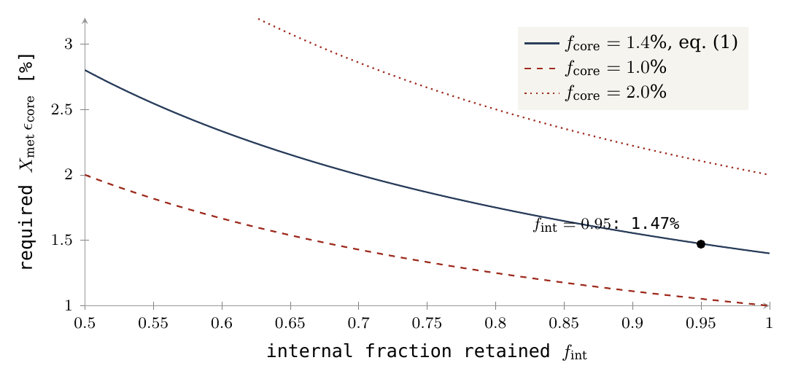
How it is tested. The test is a prediction, from the transport and differentiation of Paper 3, of the range of core fractions the mechanism produces, set beside the core measured by lunar seismology (§B.2). Differentiation here means the separation of a body into layers by density — heavy metal sinking to the centre, light silicate remaining above.
A.3R3 — Asymmetry linked to the aperture
What it asks. The Moon’s crust is thicker on the far side than on the near side. The model requires this asymmetry, and requires that it be arranged around the aperture — the connection through which the Moon was fed and by which it sat on the Earth. The crust must be thin about the old connection and thick opposite it.
Why the model needs it. Two causes act in the same direction. The first is thermal. A hot connection on one side and more efficient cooling on the opposite side suggest greater thickening on the side far from the connection, as the side of a pot away from the flame cools and sets first. The second is geometric. Paper 3 adds the geometry: the far side was the dome’s surface and carried the shell throughout, thickened threefold as that surface closed onto the far hemisphere; the near side was the base: its annulus carried the sial on which the body sat, peeled away with it, and its centre, the contact, lost that sial to the heat and was smoothed by heat and gravity (Paper 3, §C.4a). To picture the far side, think of a cloth draped over a dome and then drawn together around a ball: the same cloth now covers a smaller area, so it lies thicker. The shell of about 18 km that covered the dome closed onto one hemisphere and thickened threefold, into the far-side crust of 50–60 km of Paper 3. The near side had a different history: its outer ring (the annulus) kept the sial of the Earth’s surface on which the body rested and carried it away when the body peeled off, while the hot central contact lost that sial altogether.
The thickness results from a combination of closure, deformation and freezing, with conservation of mass; compaction must not be counted as an addition of new mass. When the shell is drawn together it becomes thicker, but no material is added: the same mass is spread over a smaller area. The thick far side therefore has to be accounted for by the mass of the shell that existed, and §B.3 shows that it is: the shell of the dome and the far-side crust agree to within about 10% (7% in an earlier version of the calculation).
What else it assumes. Inferring a thick far-side crust also requires that mixing, internal transport, compositional changes and later cratering by returning material and basin formation do not erase the asymmetry. In other words, what the closing dome produced must have survived what came after. A smooth “helmet” shape is the approximation used for the long-wavelength component: the crust is described as thickest at one pole of the body and thinning smoothly toward the opposite pole, like a helmet thicker at the crown than at the rim, and only the large-scale trend is compared, not every local detail (equation (3) in §B.3 gives this shape). There is no derivation requiring that every local point be thicker than the one before, or that a complex geological map contain exactly one maximum. Basins, maria and local thickening are expected to break the smooth curve; the requirement concerns the overall trend.
How it is tested. The test uses maps of crustal thickness derived from gravity and topography, chiefly the GRAIL mission (§B.3 and Figure 5): the crust must thicken with angular distance from the old contact on the near side, and the far-side crust must hold the mass of the shell of the dome.
A.4R4 — Orientation at the time of connection
What it asks. The Moon keeps the same face toward the Earth — its rotation is synchronous, one turn on its axis for each orbit. The model requires that this face be linked to the connection side: the side by which the Moon was attached is the side that faces the Earth.
Why the model needs it. A body whose connection prevents free relative rotation keeps its connection side toward the parent. It still rotates in space with the system. The distinction is easy to miss. Think of two dancers holding hands and turning together: each always faces the other, yet both turn relative to the room. The attached Moon is in the same position: relative to the Earth it does not turn, but relative to the distant stars it turns once with each turn of the system. In a suitable circular state, this orientation can provide a synchronous initial state for release. At the moment of release, the Moon already shows the Earth one face, and it turns once per revolution, which is exactly what synchronous rotation means.
What else must be solved. After detachment, the tidal torques, libration and changes of figure must be solved. Tidal torques are the twisting forces that arise because the Earth pulls more strongly on the Moon’s near part than on its far part; libration is the slight rocking of the Moon by which an observer on the Earth sees a little more than half of its surface over time; changes of figure are changes in the Moon’s shape, which alter how it responds to the tides. The required dynamical path must link the former connection side to the side that faces the Earth today. The phrasing “a connected body cannot rotate” is thus replaced by a definition of relative rotation: the connected body does rotate, but at the same rate as the system, so it does not rotate relative to the parent. Paper 4 treats the evolution after release.
How it is tested. The test passes the shape, spin and angular momentum at release from Paper 2 to the orbital calculation of Paper 4 and checks that the connection side stays, or returns to, the Earth-facing side (§B.4). Present synchronism alone is not the test, since tidal evolution can also produce it after other routes of formation.
A.5 R5 — A defined order of cooling and preservation
What it asks. The model requires that the far side, opposite the connection, became stable and began to keep its record before the fed region near the connection did.
Why the model needs it. The closure of the envelope opposite the connection allows earlier preservation there, while the feed region continues to be heated and to change. Once the dome closed over the far hemisphere, that surface was no longer renewed: it cooled, stiffened and began to keep the craters that landed on it. The near side, above the feed, was still being heated and reworked, so its record started later. The requirement concerns the time at which particular units became stable and preserved a record. It does not imply that every far-side sample is older than every near-side sample. A “unit” here is a region of crust with one origin and one history, such as a highland plain or the floor of a basin.
Four different ages. A distinction must be kept among the age of the shell material before it rose, the freezing age of new crust, the impact age and the age of basaltic fill. These are four different clocks. The first is the age of the material itself, which in the model was formed in the Earth’s shell before the dome rose. The second is the moment at which new crust solidified. The third is what the literature calls an impact age: the moment at which a crater-forming event melted or reset part of an existing crust. The fourth is the age of the dark lava that later filled the basins. A sample can carry one clock and not the others, so comparing a far-side clock with a near-side clock of a different kind says nothing about the order of closure. The strong prediction “all the near-side crust formed later” therefore does not follow from the integrated scenario. The narrower prediction concerns the order of closure and preservation among units with comparable origins and formation processes.
How it is tested. The test identifies units of closure and preservation on both sides, dates comparable processes, and asks whether the order survives once crater-forming events and lava fill are separated out (§B.5 sets the four clocks side by side).
A.6 R6 — Volatiles in the amount and state the mechanism needs
What it asks. Volatiles are substances that turn readily into gas, chiefly water, together with carbon dioxide and similar compounds. In Paper 3 they help the feed to work. If volatiles are required for reducing density, changing rheology or the feed pressure, the mechanism must operate with physically possible volatile concentrations and phase states throughout the path. They can reduce the density of the deep material, so that it is lighter and rises; they change its rheology — how readily it flows and deforms — as water makes molten and near-molten material flow more easily; and in gas form they add pressure that pushes the feed upward. Each of these roles needs a certain amount of volatiles, in a certain state (dissolved in the melt, as a dense fluid, or as gas), at each depth along the path.
What does not satisfy it. The presence of water somewhere in the Moon does not satisfy this condition. Finding water in lunar samples shows that volatiles exist; it does not show that enough of them, in the right state, were present where the feed needed them. The assumption of an ancient vapour envelope also does not allow dilute bubbles to be placed at every depth. At great depth the pressure keeps volatiles dissolved or compresses them strongly, so the state of the volatiles at each depth must follow from pressure, temperature and composition, not be chosen to suit the mechanism.
The volatile conditions required by Paper 3 must overlap with those permitted by a geochemical and thermodynamic model. Two ranges must meet: the range the mechanism needs, and the range that chemistry and the laws of heat and pressure allow. Loss, dissolution, ejection and transfer between reservoirs must be taken into account: part of the water escapes to space, part dissolves in melt, part leaves with ejected material, and part moves from one reservoir to another, so the water measured today is what remained after all these steps.
How it is tested. The test derives from Paper 3 the minimum concentration and phase state along the feed path and carries them through a loss-and-differentiation model to the concentrations measured in lunar samples, such as the 615–1,410 ppm of water in melt inclusions (§B.6).
A.7 R7 — The crustal distribution and the centre of mass
What it asks. The Moon’s centre of mass — the point at which its mass is balanced — does not lie at the centre of its outer shape; it lies of the order of 2 km toward the near side (§B.7). The model requires that its crust, thick on the far side and thin on the near side, produce a displacement of this kind, in this direction.
Why it follows. In a body of given external shape, replacing dense mantle with light crust on the far side creates a mass deficit there. Crust is lighter than the mantle beneath it; where the crust is thick, light material occupies space that dense mantle would otherwise fill. The far side therefore holds less mass than the near side within the same outline. Picture a ball with a thick patch of cork set into one side: its balance point lies toward the opposite side. The crust’s contribution to the centre of mass points toward the thin side. This is a gravitational result under defined conditions.
What else enters. The total centre of mass also includes topography, mantle, core, magmatic intrusions and basin fills. Topography is the height of the surface; magmatic intrusions are bodies of melt that solidified inside the crust; basin fills are the dense lavas that filled the large basins. Each moves the balance point by its own amount. The sign of the crustal contribution is therefore not necessarily the sign of the total offset. The crust pushes the centre of mass toward the near side, but the requirement is met only if the sum of all contributions points that way.
How it is tested. The test must use the same density model to compute both the thickness and the offset, without fitting a new density only to obtain the desired result. Crustal thickness is not measured directly; it is computed from gravity under an assumed density of crust and mantle. If one density were used to obtain the thickness and another to obtain the offset, the agreement would be manufactured. With a single density model, §B.7 computes an offset of 1.24–3.11 km for density contrasts of 300–750 kg/m³, a range that includes the observed order of magnitude; it is a computed sensitivity range, not an independent prediction of the offset.
With R7 the seven requirements are complete. Each joins a trace on the Moon to a step of the route: R1 to the source, R2 to the feed, R3 and R7 to the closing dome and the shape of the crust, R4 to the connection, R5 to the order of closure, and R6 to the conditions the feed needed. Part B now sets each of them against the measurements.
The seven requirements against the measurements
Part A stated what a Moon built by elevation from the Earth must look like: seven requirements, each with the physical assumption that produces it. Part B now places each requirement beside the measurement that bears on it. For every requirement the reader will find the same four steps: what was measured, how the model accounts for it, the test that would decide the matter, and the result that would count as failure. Sections B.1–B.6 cover the isotopes, the core, the crust and the maria, the synchronous rotation, the clocks of the lunar record and the water; B.7 and B.8 follow with the centre of mass and the exposure zones.
a property found on the Moon can be consistent with several mechanisms. A small core, for example, or a thick far side, can be produced in more than one way, so finding it does not by itself single out LEF. The approach: in each test the observation, the model’s explanation and the discriminating power between them are separated. “Consistent” denotes consistency: the observation agrees with what the model requires. “Open” denotes that the required comparison has not yet been performed: the calculation that would turn the agreement into a decisive test is named but not yet made. “Failed” is reserved for a contradiction under the defined conditions. These three words are used in this strict sense throughout the paper.
B.1R1 — What the isotopic similarity teaches
The question this section answers is whether the Moon is made of the Earth’s material, as the model requires (R1). Oxygen is the best single witness. It has three stable isotopes — forms of the same element that differ only in mass: O, O and O. Ordinary processes such as melting, evaporation and crystallisation sort the isotopes by mass, and they change the O/O ratio by about half as much as the O/O ratio, because the mass difference is half as large. The quantity O measures how far a sample lies from that mass-dependent line. Processing within one body does not move it, so O works as a fingerprint of the reservoir the material came from. Different bodies of the solar system, such as Mars and most groups of meteorites, carry clearly different fingerprints.
Young and colleagues reported an Earth–Moon oxygen difference:
In words: the lunar fingerprint minus the terrestrial one is part per million, with an uncertainty of parts per million at two standard errors (2SE, the usual range within which the true value lies with high confidence). A ppm is one part in a million of the ratio. The difference is therefore zero within the measurement: at a resolution of a few parts per million, the Moon and the Earth carry the same oxygen.
This is similarity at the resolution of that measurement [S1]. The number 5 ppm is a reported uncertainty, not a physical threshold derived from LEF for every element: a future measurement with finer resolution could still find a small difference, and other elements must be checked on their own terms. For LEF the agreement is what the scenario predicts directly, since the Moon’s material came from the Earth. For the impact model of others, in which most of the Moon would come from the impacting body, the same agreement requires strong mixing between the two bodies. The authors themselves discussed mixing during a giant impact, so the datum does not by itself distinguish a connected route from a mixed impact route (Young et al., 2016). The oxygen result is therefore a necessary match for LEF, and what turns it into a discriminating test is the balance below.
Test: compute the product composition from defined terrestrial reservoirs and check it against several isotope systems in different samples, with the measurement errors and the variance among reservoirs. In practice: name the terrestrial sources (the deep reservoir and the sialic shell of Paper 3), mix them in the proportions the model gives, allow for the losses of melting and evaporation, and compare the result with oxygen, and also with other isotope systems, in several lunar samples at once. Failure: no combination of terrestrial sources and permitted processes explains the data together. Status: the isotopic match is important, but a multi-system balance of LEF is still open.
B.2 R2 — The core is a quantitative target for transport
The Moon has a metallic core, and it is small. This matters for LEF because every part of the Moon’s metal had to be carried up from the Earth by the feed. The size of the core is therefore a measure of how much metal the transport delivered, and a measured size becomes a target the mechanism must hit.
The core is measured by seismology. The seismometers left by Apollo recorded moonquakes for years, and the way the waves are reflected and slowed at depth reveals the layers. The seismic model of Weber and colleagues includes an inner core of radius about 240 km and a liquid-core boundary at radius about 330 km [S2]. These radii are measured from the centre of the Moon; they are not two layer thicknesses to be added: a solid inner ball of 240 km sits inside a liquid shell whose outer edge lies at 330 km, under a Moon of radius 1,737.4 km. The mass fraction also depends on density and structure; 1.4% is kept here as a comparison value from the source, not as an exact independent measurement. For scale, the Earth’s own metal core is far larger in proportion; the Moon is a body poor in metal.
Equation (1) of Part A turns this into a balance: the core fraction equals the internal share of the Moon, times the effective metal fraction in the fed material, times the part of that metal which reached the core. With , a core of 1.4% needs the product near 1.47% (Figure 4). Equation (1) thereby defines a requirement for Paper 3: the mechanism must explain the rate of metal delivery and its subsequent separation. A small core is consistent with a preference for silicates — an upwelling that carried mainly light silicate material with a little metal in it — but does not prove that the feed source lay beneath a terrestrial core not yet organised. Test: a prediction of the range of from the transport and the differentiation, that is, from how much metal the flow could entrain and how much of it then sank to the centre. Failure: all supported entrainment ranges give a core outside the range permitted by the interior data. Status: the target property exists; the mechanism of its transfer is not yet quantitatively closed.
B.3 R3 — The crust, the maria and the mass that arrived from outside
The model requires the crust to be thicker on the side away from the connection (R3). This section reads the measured crust, writes the expected shape as a simple formula, and then checks whether the shell carried by the dome of Paper 3 has the right mass to make the far-side crust.
The crust is not measured directly; it is inferred from gravity. The two GRAIL spacecraft flew one behind the other around the Moon and measured the changing distance between them; each excess or deficit of mass below pulled the leading craft first, and the trailing one after it. Combined with the surface heights measured by the LOLA laser altimeter, the gravity of the visible topography can be subtracted. What remains is attributed to the relief of the boundary between the light crust and the denser mantle beneath it. To convert that relief into a thickness one must choose a crustal density and fix the thickness at one point, from the Apollo seismic data. GRAIL data support a broad-scale asymmetry of the crust and models with a global mean thickness of 34–43 km, subject to the density model and the seismic anchor [S3]; the spread of the mean reflects those two choices. This must not be identified with a measurement of “30 km on the whole near side and 60 on the whole far side”. Those numbers serve below as a geometric example only (Figure 5).
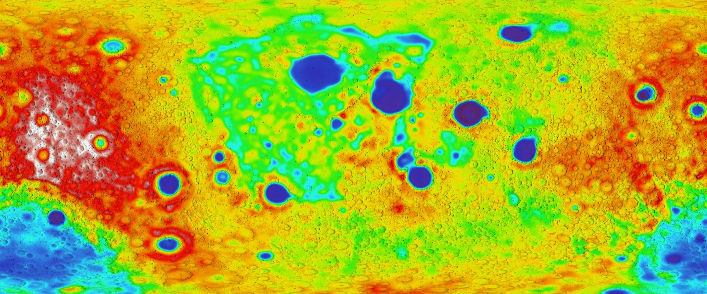
How to read Figure 5: the centre of the map is the face the Moon turns to the Earth, and the left and right edges are the far side. The blue patches in the centre are thin crust beneath the large near-side basins; the warm colours toward the edges are the thick far-side highlands. The thickening from centre to edges is the pattern R3 requires.
To compare a model with such a map, one needs the expected shape as a formula. Define as the angular distance from the connection axis — at the centre of the former connection, on the belt halfway around, at the point opposite — and take for testing the approximation:
Here is the crustal thickness, the thickness on the belt at , and the amplitude of the asymmetry. Because runs from at the connection to opposite it, the crust is thinnest, , at the connection and thickest, , on the far side: a smooth “helmet” with one thin pole and one thick pole. End values of 30 and 60 km give km and km; in the belt at 90° one obtains 45 km. These are end values, not hemispheric means: the means in the example are 37.5 and 52.5 km. The reason is geometric: averaged over the area of a hemisphere, has the value one half, so the hemispheric means are . Inserting means as end values changes the amplitude of the model — reading 37.5 and 52.5 km as end values would give km, half the amplitude of the example.
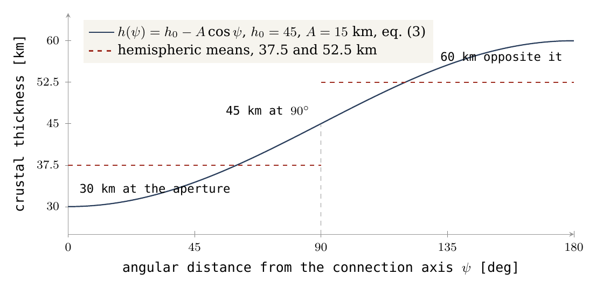
Figure 1 draws equation (3). The navy curve rises from 30 km at the aperture to 60 km opposite it; the red dashed steps are the averages over each half, which lie well inside the end values. The global mean measured by GRAIL fixes the general level of the curve (), but says nothing about how steeply it rises (); the steepness must come from the map itself.
Map test: fix the axis, the resolution and the basin mask before the fit; compute area-weighted means in belts; estimate and the residuals across density models. A basin mask removes the large basins from the averages, so that their local thinning is not mistaken for the global trend; area weighting gives each belt its true share of the surface, since belts near the axis are small. Sensitivity should also be checked without the mask. Reconstruction of material excavated in basins cannot be dictated in advance by the shape one wishes to find. An axis chosen from the map itself is a fitted parameter and must be tested on separate data; otherwise the test would find the pattern it had been tuned to find. Section B.8 carries out this belt test on the exposure-zone geometry.
The maria — the dark, smooth plains of the near side — are concentrated on the near side, but basaltic cover is also affected by magma production, heat sources and fractures. In the model a mare is an opening over a feed dome, through which the late lava reached the surface. The boundary structures of Procellarum were interpreted on the basis of GRAIL as a system of rifts and magmatic intrusions with a rectangle-like geometry, linked to thermal stresses [S4]. That study does not identify an ancient connection neck to the Earth (Andrews-Hanna et al., 2014). Nor does the model require one: in LEF there was no neck; the body peeled from the base it sat on (Paper 3, §C.4a), and the openings are what the near side shows in its place.
In LEF the asymmetry is the shell of the dome thickened on closure, with non-uniform heating: the far side was the surface of the dome and carried the shell, which thickened as that surface closed onto the far hemisphere, while the connection side was kept hot. An earlier Earthshine-based explanation also proposes a link between a hot Earth and a cold, thicker lunar far side [S5]: in it, the young, glowing Earth kept the near side warm while the far side cooled, and crust-forming material condensed preferentially on the cold side. Two different mechanisms thus predict the same general direction. The general asymmetry is therefore a match, while the deformation and mass patterns may provide a discriminating test (Roy et al., 2014).
A further balance check. The thickening on the far side must come from somewhere: compaction does not create mass. The question is whether the shell that rose on the dome of Paper 3 contains enough material to make the far-side crust. According to the dome of Paper 3, a shell of thickness km and density 2,800 kg/m³ over the surface of a hemisphere of radius 3,000 km, :
In words: the mass of the shell is its density times its thickness times the area it covers, the curved surface of the hemispherical dome (, half the area of a full sphere of the same radius). The result is about four per cent of the Moon’s mass, .
For a comparison of orders of magnitude only, a present spherical crust of outer radius km, adopted density 2,550 kg/m³ and uniform thickness , contains:
Equation (5) is the volume of a spherical shell — the volume of the whole Moon minus the volume of the sphere inside the crust — times the crustal density . The table evaluates it for the two ends of the GRAIL mean and for a far-side thickness of 55 km; the last column takes half the shell, the mass of the far hemisphere alone at that thickness.
|
Thickness in the example |
Crust mass | Fraction of the lunar mass | Far hemisphere alone at this thickness |
|---|---|---|---|
| 34 km | kg | 4.39% | kg |
| 43 km | kg | 5.52% | kg |
| 55 km | kg | 7.01% (earlier 7.02%) | kg |
The table is not a global reconstruction of GRAIL; it illustrates the balance requirement. The shell of the dome closes onto the far hemisphere alone: kg of shell against kg of far-side crust at 55 km — the two agree to about 10% (an earlier version of this row gave kg, 7.05%, kg and an agreement of 7%; recomputing equation (5) with the same density, 2,550 kg/m³, gives the values now in the table), with no parameter adjusted between them. The shell thickness and the dome radius come from Paper 3; the crustal thickness and density come from the lunar data; neither was tuned to meet the other. The three-fold thickening of Part A follows from the same geometry: an 18-km shell spread over a dome surface larger than the far hemisphere, and gathered onto it, becomes a crust of the order of 55 km. The near-side crust, 30–35 km, is not the shell of the dome; it is the sial of the base, peeled away with the body (Paper 3, §C.4a), and its mass, about kg (equation (5) over the near hemisphere at 30–35 km: – kg; an earlier version gave about kg), is a separate term of the balance. Sial is the light, silica- and alumina-rich outer layer of the parent, of the kind that forms the Earth’s continents; the body sat on it and took it along when it peeled away. The shared label “sialic” does not resolve the mineralogical differences between terrestrial source material and a plagioclase-rich lunar crust: the lunar highlands are dominated by plagioclase, a calcium–aluminium feldspar, and the path from one composition to the other is part of the balance still to be computed.
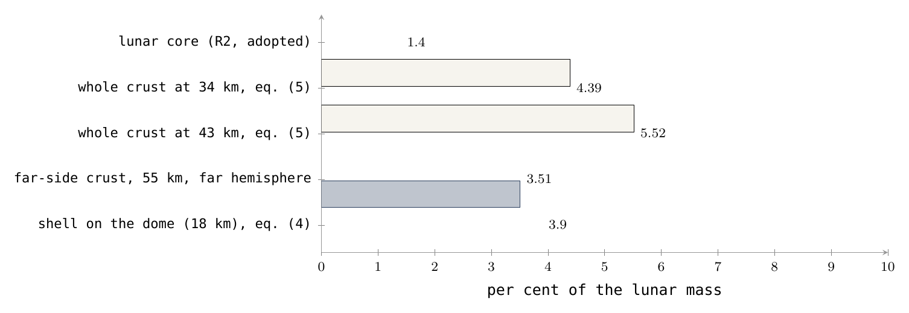
Figure 3 sets the masses side by side as fractions of the Moon. The first two bars — the shell the dome carried and the far-side crust it must supply — are nearly equal; the two open bars show the whole crust at the ends of the GRAIL range, larger because they include the near side as well; the red bar is the core of R2, the second quantity the feed of Paper 3 must deliver.
Failure: no balance of material and composition supplies the crust and the spatial prediction with the same parameters. Status: asymmetry observed; the profile, the source of the mass and the identification with the aperture are open for testing. What we now have: the crust is thicker on the far side, as required; the shell of the dome has the mass of the far-side crust; and the test that would fix the profile and the axis is defined.
B.4 R4 — Present synchronism and the connected past
The Moon today shows approximately synchronous rotation, with librations. Synchronous rotation means that the Moon turns once on its axis in exactly the time it takes to go once around the Earth, so it always turns the same face toward us. Librations are small apparent swayings of that face, caused mainly by the ellipse of the orbit and the tilt of the axis, which let an observer on the Earth see slightly around the edges. A hammer thrower’s hammer shows the same picture: as long as it is held, it shows the same side to the thrower while the two turn together. A body attached to its parent does the same, and R4 asks whether the Moon kept, after release, the face it had while it was attached.
Such a state is consistent with inheritance of an orientation at the time of connection, and also with tidal evolution after other formation routes [S6]. Tidal evolution is the slow braking of a moon’s spin by the tides its planet raises in it, until the spin matches the orbit; most large moons of the solar system have been locked in this way. The distinction requires more than the 1:1 ratio: the ratio alone is reached by both routes, so the test must concern which face is locked and how it got there.
Test: pass the figure, the spin and the angular momentum at release from Paper 2 to the calculation of Paper 4, and check the preservation of the connection-region direction with the orbital evolution. Angular momentum is the quantity of rotation a body carries — for a spinning or orbiting body, its mass times its speed times its distance from the axis — and it is conserved unless a torque acts. The calculation must show that the side which faced the Earth at release is the side that faces it today. Failure: no supported path preserves or restores the required geometric relation. Status: general dynamical consistency; continuity from the connection is not proved.
B.5R5 — Four different clocks
R5 requires a definite order: the far side closed and kept its record first, while the fed near side stayed hot and active longer. Testing an order needs ages, and the lunar record offers several kinds of age that are easily confused. An everyday picture helps. In an old house one can date the firing of the bricks, a fire that later scorched one wall, a coat of paint added afterwards, and how long the facade has stood weathering. All four are true dates of the same house, and none of them alone is the date the house was built. The Moon’s four clocks are of this kind.
|
Clock |
What it measures | How to use it |
|---|---|---|
| Crystallisation age of crustal material | Formation of a mineral or unit, subject to later resetting | Compare units of similar origin and process |
| Impact or impact-melt age | An event that altered an existing crust | Not the formation age of a hemisphere |
| Basaltic fill age | Crystallisation of late lava | Describes volcanic activity, not necessarily the age of the substrate |
| Exposure or preservation age | Duration of the record under a chronology model | Depends on burial, erosion and crater saturation |
How to read the table, row by row. The crystallisation age is set when a mineral grows from a melt and starts to trap the products of radioactive decay; it is the brick clock, but strong later heating can reset it. The impact or impact-melt age — the literature’s name for it — dates the event that melted part of a crust already in place; in the model, the craters were made by returning material that landed (Paper 6), and such ages date those landings, not the making of a hemisphere. The basaltic fill age dates the lava that later flooded the basins: the paint, laid over an older wall. The exposure or preservation age is not read from a sample at all: it is estimated from the density of craters on a surface, through a chronology model, and it tells how long the surface has kept its record — it depends on whether the surface was buried, eroded, or so crowded with craters that new ones erase old ones (saturation). Each clock thus measures a different event, and the rule of the table is that ages may be compared only within one kind.
Chang’e-5 samples record basalt about 2.0 billion years old on the near side [S7]. The Chang’e-6 study records far-side volcanism about 2.8 billion years ago [S8]. Both are fill ages, the third clock. These are examples of late activity on both sides; it must not be inferred from them that the whole far side closed on one date, or that the near side remained connected to the Earth until that basalt formed. In the model the Moon was released long before either lava erupted.
The age assigned to the South Pole–Aitken basin dates an event in that basin, depending on the identity of the dated material: whether the sample is melt of that basin or of a later one. Even a precise date does not establish that the near-side crust had yet to form. A difference such as 4.5 minus 3.9 billion years therefore does not measure 600 million years of construction: it subtracts a reading of the second clock from an assumed starting date, which are ages of different kinds. That window remains the author’s scenario, the timeline of the series stated with the environment conditions of Part A, with a separate requirement to test chronological consistency.
Test: identify closure and preservation units on both sides of the geometry, date comparable processes and examine whether the difference remains after separating impact and fill. In terms of the table: compare first clock with first clock and fourth with fourth, on units that formed in the same way on the two sides, and only then ask which side is older. Failure: identified, representative units require the opposite order to the one predicted, beyond the uncertainty and the permitted late changes. Status: to be computed; the basalt data are not the confirmation required for the order of crust formation.
B.6 R6 — Measured water versus the water the transport requires
R6 has two sides. The feed of Paper 3 needed volatiles — water above all — to lower the density of the rising material and to keep it mobile. The Moon must therefore still carry the trace of that water. This section sets what was measured against what the mechanism requires, and these are two different quantities.
Hauri and colleagues measured 615–1,410 ppm water in lunar melt inclusions trapped in olivine before eruption [S9]. A melt inclusion is a tiny droplet of magma sealed inside a crystal of olivine as the crystal grew underground. The crystal acts as a sealed bottle: when the lava erupted and lost its gases, the droplet kept its water. Here ppm is parts per million by mass, so 1,410 ppm is about 0.14% water by mass. Hauri and colleagues noted that such values are comparable to those of magmas from the Earth’s upper mantle: the interior of the Moon is not dry.
This measurement concerns magma preserved in inclusions and some lunar source regions, rather than a uniform concentration throughout the Moon at formation. A concentration in the magma and a concentration in the source mantle are also not the same quantity (Hauri et al., 2011): when a source partly melts, water prefers the melt, so the magma is richer than the mantle that produced it.
In a general description, water passes among source, melt, gas, retained material and lost material. A lunar reservoir balance can be written:
In words: the rate at which the Moon’s store of volatiles changes equals the rate at which volatiles arrive (with the feed) minus the rate at which they are lost (to space, by degassing, or back to the parent). It is the balance of a bathtub with the tap open and the drain unplugged: the water level at the end tells little about how much flowed through unless both flows are known. This equation requires a model for the fluxes and the composition; it does not by itself reconstruct the initial inventory. A vapour-rich atmosphere does not verify the density chosen for deep material at high pressure: the volatiles needed to lighten the material must be present in the material itself, at depth, in the phase state that pressure allows.
Test: derive from Paper 3 the minimum concentration and phase state along the feed path, and pass them through a loss-and-differentiation model to the concentrations in the samples. In short: start from the water the mechanism needs, subtract what equation (6) says was lost, and compare what remains with the 615–1,410 ppm of the inclusions. Failure: the possible volatile domain does not overlap the domain required to operate the transport. A single dry sample does not prove that all the formation reservoirs were dry. Status: internal volatiles are supported by samples; closure of their dynamical role is open.
What we now have, at the end of B.1–B.6: the oxygen, the small core, the thick far side, the face kept toward the Earth, the late lavas on both sides and the water of the interior are all present on the Moon as the route requires. For each, the calculation that would turn the match into a decisive test has been named.
B.7 R7 — A joint calculation for thickness and centre-of-mass offset
The question this section answers is whether the thick far-side crust of §B.3 also accounts, by the same numbers, for a second, independent observation: the Moon’s centre of mass does not sit at the centre of its outer shape. Two centres must be distinguished. The centre of figure is the geometric centre of the Moon’s surface, the centre one would find by fitting a sphere to the topography. The centre of mass is the balance point of all its material, the point about which the Moon orbits. On the Moon the two are separated by about 2 km, and the centre of mass lies on the side toward the Earth.
The connection to the crust is direct. Crust is lighter than the mantle beneath it. Where the crust is thick, light material occupies a volume that would otherwise hold dense mantle, so that side of the Moon is lighter. A ball whose one side is lined with a thick layer of cork and whose other side is lined with a thin one balances off-centre, its balance point displaced toward the thin-cork side, where more of the heavy interior reaches close to the surface. The Moon is such a lopsided ball: the far side carries the thick crust, the near side the thin one, and the centre of mass is therefore displaced toward the near side. What follows turns this picture into a number, so that the thickness model and the offset can be tested together rather than separately.
Choose an axis from the geometric centre toward the connection, that is, toward the near side where the crust is thinnest. The centre of mass is computed from the full distribution:
Equation (7) is the definition of a balance point: every small volume of the Moon, with density at position , contributes its mass multiplied by its distance along the chosen axis; the sum over the whole volume , divided by the lunar mass , is the distance of the centre of mass from the geometric centre. A perfectly symmetric body gives zero, because each contribution at is cancelled by an equal one at . Only the asymmetric part of the distribution survives.
In a spherical example with a crust of the thickness of equation (3), , and constant densities for mantle and crust, define the density contrast : the mass missing from each cubic metre where crust stands in place of mantle. A symmetric core adds no mass moment in this direction, since it is centred and cancels itself in equation (7). In the thin-shell approximation — treating the crust as thin compared with the lunar radius , so that all of its variation sits at about the same distance from the centre — the integral gives:
Equation (8) says that the offset equals the amplitude of the thickness variation, scaled down by the ratio of the density contrast to the mean lunar density (3,346 kg/m³, the value used in Figure 2). The constant part of the crust is the same in every direction and drops out; only the side-to-side part moves the balance point. The second form follows from the first because . The result is easy to hold in the mind: with a contrast of a few hundred kg/m³, about a tenth of the mean density, an amplitude of 15 km gives an offset of the order of a tenth of 15 km, that is, of the order of 1–2 km.
The sign is positive: the crust’s contribution points toward the thin side. This is the lopsided ball of the paragraph above: the far side, with more light crust, is the lighter side, and the balance point moves away from it.
The thin-shell form places the whole variation at the surface radius. In reality the variation of the crust appears at its base, where the crust–mantle boundary rises under thin crust and sinks under thick crust. Integration of the finite layer thickness, with the mean radius of that boundary, gives:
Equation (9) has the same structure as equation (8). Its first term is the thin-shell term with replaced by : the varying boundary lies deeper, at a smaller radius, so its lever arm about the centre is shorter and the offset is somewhat smaller. Its second term, in , is a small correction from the finite size of the variation itself. The two equations bracket the same physics; the difference between them is the measure of how much the thin-shell simplification matters.
In the example km and km (the end values of 30 and 60 km of Figure 1). The table gives the offset for three density contrasts, by both equations. Read across a row to see the effect of the finite thickness (a few per cent), and down a column to see that the offset grows in proportion to :
|
, kg/m³ |
Thin shell, km | Finite-thickness integration, km |
|---|---|---|
| 300 | 1.345 | 1.243 |
| 500 | 2.242 | 2.072 |
| 750 | 3.362 | 3.108 |
The observed offset from the geometric centre is of the order of 2 km toward the near side [S10]. The table shows that this order of magnitude is possible in the example: the middle row, at 500 kg/m³, gives just over 2 km. It does not determine the crustal density. Each density row is a comparison model whose symmetric part must be normalised to the same lunar mass; changing while keeping the Moon’s total mass fixed requires adjusting the densities elsewhere, and that adjustment is part of each row. In a full model the mass, tidal and moment-of-inertia constraints must also be met. The moment of inertia measures how mass is spread between centre and surface — a body with a dense core turns more easily than a uniform one of the same mass — and the measured lunar value, together with the total mass and the tidal response, limits which density structures are allowed.
Choosing a density so as to obtain exactly 2 km is an inverse solution, that is, a fit to the datum: the answer is used to set the input. It must not be called an independent prediction. The density and thickness model must first be fixed from further information and the whole offset vector computed from it. What the calculation does establish is the sign, the order of magnitude and the sensitivity: the predicted offset points the right way and has the right size for contrasts within the range considered.
Figure 2 shows the same result as a continuous curve. The horizontal axis is the crust–mantle density contrast from 200 to 800 kg/m³; the vertical axis is the offset in kilometres. The navy line is the thin-shell result, equation (8); the red line, slightly below it, is the finite-thickness result, equation (9); both are straight lines through the origin, because the offset is proportional to . The black dots are the three rows of the table. The grey dashed line at 2 km is the observed order of magnitude. Where the red line crosses the dashed line, near kg/m³, the model reproduces 2 km exactly — and the note on the plot records that this crossing is a fit, not a prediction.
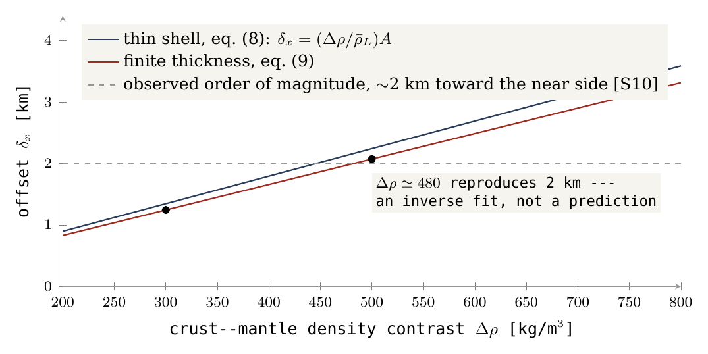
The axis also matters. The calculation above assumed that the thin side, the connection and the direction of the offset all lie on one line. On the real Moon this need not be so. The centre of the contact as outlined by the author, 24.1° north and 335.2° east (Paper 3, §B.4), lies about 34.0° from the point 0°,0° on a reference map — the sub-Earth point, through which the mean Earth line passes (the line from the Moon’s centre toward the mean direction of the Earth). An axial model about the contact centre therefore does not automatically predict an offset straight along the mean Earth line; it predicts an offset tilted toward the contact. The thickening axis, the centre of the connection region and the direction of the centre of mass must be distinguished, and the vector components computed: the test compares a direction as well as a length.
Test: a joint fit of thickness, density, topography and offset in the same coordinate frame. Failure: no supported density model explains the magnitude and direction together with the other interior constraints. Status: sign and sensitivity derived under explicit conditions; the global test is open.
What we now have: the crust of §B.3 displaces the centre of mass toward the near side, by an amount of the observed order for density contrasts of a few hundred kg/m³. The next section turns from the crust’s thickness alone to the full ordering of the lunar surface that the mechanism predicts.
B.8R8 — The exposure zones
This section states the test that the mechanism stakes the most on. It follows from the way the Moon’s surface was uncovered, step by step, as the body formed and left.
If the shell rose as the surface of a hemisphere and that surface closed onto the far side while the base became the near side (Paper 3, §B.4), different parts of today’s Moon were exposed to space at different times. The curved surface of the dome was open to space from the start, from the flat stage onward. The flat base sat on the parent; as the hemisphere rounded into a ball, the base lifted off from its rim inward, much as a suction cup peeled from a glass lets go first at its edge and last at its centre. The last part to come free was the contact itself, exposed only at release. The surface of the Moon therefore records the exposure sequence of the dome as three concentric zones about the centre of the near side:
the contact, exposed last, inside about ;
the base annulus, exposed during the rounding, from to ;
the dome’s surface, exposed from the flat stage, beyond .
The angles follow from the translation rule of Paper 3, which maps each part of the dome onto the finished sphere: the rim of the base becomes the present limb at , and the contact, one quarter of the base, becomes a near-side cap of about . The boundaries and were the exposure rule at the time of the September tests reported below; Paper 3’s current translation rule places them at and — the contact cap –, the belt – and the far part –, about a contact centre at N E — and the recomputation at the end of the results uses it.
Three properties follow from this sequence. The far side, the former shell, was thickened on closure and so carries the thickest crust. It was exposed longest and so carries the oldest craters. And the basins formed in each zone record the conditions of that zone when they formed. Crustal thickness, the oldest crater population and the character of the basins should order themselves by angular distance from the near-side centre, and by no other axis. This is the strongest single prediction of the mechanism, and the test is stated here with thresholds so that it can fail. The axis, the belts and the thresholds were fixed before the computation; the results reported below were measured against them.
The axis. The ordering is measured as angular distance from an axis through the Moon’s centre. The primary axis is the sub-Earth point, N E — the point on the Moon directly under the Earth — since the contact faced the Earth and the Moon has kept that face. As a sensitivity, the test is repeated with the axis at the centre of the Procellarum region, about N E (the contact as later outlined by the author is centred at N E, Paper 3); the predicted ordering must hold for the primary axis and must not improve materially for an arbitrary third axis (the antipode of the sub-Earth point, or the north pole). The control axes are the safeguard against a pattern that would appear about any axis: if the crust were ordered just as well about the north pole, the ordering would say nothing about the mechanism.
The belts. Area-weighted means in three belts of angular distance from the axis: the contact disc (–, 12.5% of the surface, one eighth), the limb belt (–, 37.5%), and the far side (–, 50%). Area weighting is needed because map grid cells shrink toward the poles of the grid; without it, small cells would count as much as large ones. For the trend, twelve belts of are used; the trend statistic of T5 is the Spearman rank correlation between belt index and belt mean over these twelve belts, with the differences between the three belt means of T1 reported alongside it. The Spearman rank correlation ranks the belts by their mean values and asks how closely that ranking follows the order of the belts from the axis outward: means that every belt is thicker than the one before it, means no order, and a steady decrease. It tests the order, not the shape of the rise, which is what the prediction specifies.
The maria are not masked. They are the thinnest crust of the near side and, in the model, the openings of the contact disc (Paper 3, §B.5) and its youngest surface — the prediction itself, in both tests: a thin crust and a surface with few old craters at the centre. To mask them would remove the prediction from the test. The conventional mask for crater counts, which treats the basalt as a cover over an older population, is reported alongside for comparison, so that the reader can see the result under both readings. The two boundaries are drawn on the gradient map in Figure 6.
Figure 6 introduces the gravity terms used in the tests. A Bouguer anomaly is the gravity measured by the GRAIL spacecraft after the pull of the visible topography has been removed; what remains shows the mass hidden below the surface. A mascon (mass concentration) is a strong positive Bouguer anomaly under a basin: dense material lies close beneath it. A ringed mascon basin shows, in addition, a resolved ring of opposite sign around the centre. In Figure 6, read the two circles first: inside the solid circle is the contact disc, between the circles the limb belt, outside the dashed circle the far side. Then look at where the blue mascons fall relative to them.
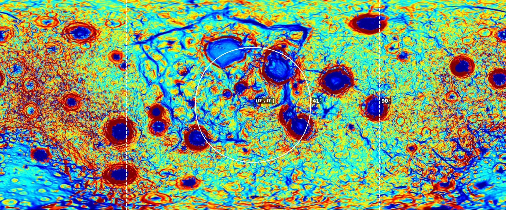
The five tests are set out in the table below. Each row names the data used, what the model predicts, the result that counts as a pass, and the result that refutes the model. Between the pass threshold and the refutation line lies a range in which a test is undetermined: the data neither confirm the prediction at the stated strength nor contradict it.
|
Test |
Data product | Prediction | Threshold for a pass | Refuted if |
|---|---|---|---|---|
| T1 — crustal thickness | GRAIL crustal-thickness model with the seismic anchor [S3], grid | Mean thickness increases from contact disc to limb belt to far side | Each belt mean exceeds the previous by km; far side minus contact disc km; in the belts, no more than one reversal of the trend | Far side minus contact disc km, or the ordering is not monotonic in the three belts |
| T2 — oldest craters | Craters km with pre-Nectarian or Nectarian assignment [S12], areal density per km², maria included | Far side densest, limb belt intermediate, contact disc least; upper bound far/limb for a population entirely carried up | Far/limb ; far/disc ; limb/disc | Far/limb , or the contact disc as dense as the far side |
| T3 — ringed mascon basins | Basins with a mass concentration and a resolved ring in the GRAIL Bouguer gradient [S3, S4] | Centres concentrated in the limb belt | of ringed mascon basins have centres at – from the axis | , or a distribution uniform in |
| T4 — unringed mascons | Basins with the strongest positive Bouguer anomalies and no resolved outer ring | Centres inside the contact disc and its margin | of the ten strongest within | |
| T5 — axis specificity | All of the above repeated for the sub-Earth axis, the Procellarum axis, and two control axes | Ordering present for the first two, absent for the controls | The trend statistic for either control axis is below half that for the primary | A control axis orders the data as well as the primary |
In plain terms, the five tests ask:
T1 — is the crust thinnest in the contact disc, intermediate in the limb belt and thickest on the far side, by clear margins? The seismic anchor is a crustal thickness measured by the Apollo seismometers, which fixes the absolute level of the gravity-derived model.
T2 — are the old craters (the pre-Nectarian and Nectarian periods, before and during the formation of the Nectaris basin) densest on the far side and sparsest at the centre? The upper bound of 3 is the largest crowding possible if a population formed on the dome survived its closure entirely.
T3 — do the ringed mascon basins lie mainly in the limb belt? The limit of allows a margin just beyond the limb. A distribution uniform in is what basins scattered at random over the sphere would give.
T4 — do the strongest mascons without rings lie in and around the contact disc?
T5 — is the ordering specific to the predicted axis, or would any axis do as well?
A reading of the published maps gives the sense of the outcome: the far-side crust is thicker than the near side in every GRAIL model [S3], by about 8 km in hemispheric means (30.0 against 38.0 km on Model 1); the far-side highlands carry a higher density of large old craters than the near-side highlands [S12]; and the ringed mascon basins — Orientale, Crisium, Humorum, Nectaris, Smythii, Humboldtianum, Moscoviense — lie at the limb, while the strongest unringed mascons — Imbrium, Serenitatis, Procellarum — lie near the centre. These map interpretations identify possible matches for testing; they do not constitute passed tests: the thresholds above are what the belt statistics must show, with the axis and the mask fixed before the computation. Figures 7–11 show the three zones as they appear on the published maps.
Results (September 2026). The three tests T1, T2 and T5 were run on the published data with the axis, belts and thresholds above.
T1 — crustal thickness. The test was run on the four crustal-thickness models of the GRAIL archive [S3] (0.25° grids, global means 34, 35, 43 and 43 km). The four models rest on different assumptions, which raise or lower the whole crust, as their different global means show; the question is whether the ordering survives in each. The belt means for contact disc, limb belt and far side are given in the table below; the colour deepens as the crust thickens, and in every row it deepens from left to right.
| GRAIL model | Contact disc, km | Limb belt, km | Far side, km | Far minus disc, km |
|---|---|---|---|---|
| Model 1 | 28.3 | 30.6 | 38.0 | 9.65 |
| Model 2 | 29.1 | 31.4 | 39.2 | 10.0 |
| Model 3 | 37.0 | 39.3 | 47.3 | 10.3 |
| Model 4 | 36.8 | 39.1 | 47.4 | 10.6 |
The ordering is monotonic in all four models: each model has the thinnest crust in the contact disc, more in the limb belt, and the most on the far side. The contrast far side minus contact disc is 9.65, 10.0, 10.3 and 10.6 km in Models 1–4 (the differences are taken from the unrounded belt means), against the lines set in advance: a pass at km, a refutation below 10 km. In Model 1 the difference, 9.65 km, falls 0.35 km below the refutation line; Models 2–4 lie between the lines (10.0 on the line, 10.3, 10.6). The ordering contact disc limb belt far side holds in all four. T1 has therefore not passed; on Model 1 it meets its own refutation criterion by 0.35 km (an earlier version said the contrast lay above the refutation line in three models of four and called T1 undetermined). The largest step is from the limb belt to the far side; the step from the contact disc to the limb belt is smaller than the 5 km per step that the pass threshold asks.
T5 — axis specificity. Twelve belts of 15° about the sub-Earth axis give a Spearman rank correlation of () in every model. The probability is the chance of so strong an ordering arising in twelve belts with no real trend: about two in ten thousand. On Model 1 the belt means rise from 26.8 km at 30–45° to 45.6 km at 165–180°, monotonic over ten consecutive belts (an earlier version said nine). The control axes give and for the north and south poles, for the east limb and for the Procellarum axis. T5 passes: the predicted axis organises the crust better than any control. The Procellarum axis comes close, as expected, since it lies only some tens of degrees from the sub-Earth point and shares much of the same pattern; the poles, which the mechanism gives no role, order the crust weakly and in opposite senses.
T2 — oldest craters. The test was run on the Robbins catalogue [S13] of craters of 20 km and more (6,973 craters, all ages, an age-selected catalogue not being accessible). It gives the densities below, in craters per km; the colour deepens with crater density, and again deepens from the centre of the near side outward.
| Count | Contact disc | Limb belt | Far side |
|---|---|---|---|
| Maria included (the test) | 99 | 164 | 219 |
| Conventional mare mask | 160 | 193 | 218 |
With the maria included, the ratios are far/limb 1.34, far/disc 2.21, limb/disc 1.65, each above its pass threshold (1.3, 1.5, 1.1). The far side carries more than twice the crater density of the contact disc. The few and recent craters on the maria are, in the model, landings after release — terrestrial ejecta captured by the Moon (Paper 6, §M.1), with a late addition of fine space dust — on the surface exposed last. T2 passes on all three ratios. With the conventional mare mask applied, the densities, per km of unmasked area, give ratios 1.13, 1.37, 1.21 — the same ordering, above the refutation line. The ordering therefore does not depend on how the maria are treated; masking narrows the contrast but does not reverse it. The age-selected count, which the test specifies, remains to be done: the all-ages count includes younger craters, which in the model landed on every zone after release and so dilute the contrast rather than create it.
T3 and T4 have not been run. Data, scripts and belt means are in the reproduction package.
Recomputed on the current geometry (15 October 2026). The September tests used the sub-Earth axis and the boundaries and . The series now places the contact centre at N E, from the sub-Earth point (Appendix A), with the contact cap at –, the belt at – and the far part at – (Paper 3). The crater densities and the crustal thickness of Model 1 were recomputed on this geometry. This is a recomputation on the current zones, not a new test: the thresholds are those of the table above, with the contact cap, the belt and the far part in the places of the contact disc, the limb belt and the far side.
| Quantity (current geometry) | Contact cap | Belt | Far part | Ratios or difference |
|---|---|---|---|---|
| Craters km per km, maria and SPA removed | 53 | 187 | 220 | 1.17 / 4.15 / 3.55 |
| Craters km per km, maria counted | 26 | 148 | 215 | 1.45 / 8.42 / 5.81 |
| Crust, Model 1, km, maria kept | 26.3 | 30.3 | 36.2 | far cap 9.9 |
| Crust, Model 1, km, maria and SPA removed | 31.3 | 33.0 | 38.9 | far cap 7.5 |
Ratios are far/belt, far/cap and belt/cap, and differences are taken from the unrounded values. The colour deepens with the value; in every row it deepens from the contact cap outward.
Craters (Robbins, km [S13]). With the maria and SPA removed from both the counts and the areas, so that like is compared with like, the densities are 53, 187 and 220 per km in the contact cap, the belt and the far part: far/belt 1.17, far/cap 4.15, belt/cap 3.55, against the T2 lines (far/limb , far/disc , limb/disc ; refuted if far/limb ). The ordering holds; two of the three ratios pass, and far/belt lies between its lines. With the maria counted, the September convention, the densities are 26, 148 and 215, and the ratios 1.45, 8.42 and 5.81.
Crustal thickness (GRAIL Model 1 at ). With the maria kept — the T1 convention, since the maria are the openings — the means are 26.3, 30.3 and 36.2 km: the ordering holds and the far part exceeds the contact cap by 9.9 km. With the maria and SPA removed they are 31.3, 33.0 and 38.9 km, a difference of 7.5 km. Models 2–4 need the full grids and are left to the rerun; on the September geometry they gave a far-minus-disc difference 0.37–0.92 km above Model 1’s.
The five figures that follow show the three zones as they appear on the published maps. Figures 7–9 are globe views, one per zone, from the centre of the near side to the limbs to the far side; Figures 10 and 11 are whole-Moon maps of gravity and elevation, on which the zones can be read side by side. In each, look for the same sequence from the near-side centre outward: strong mascons without rings, then ringed basins, then basins on thick, high crust without either.
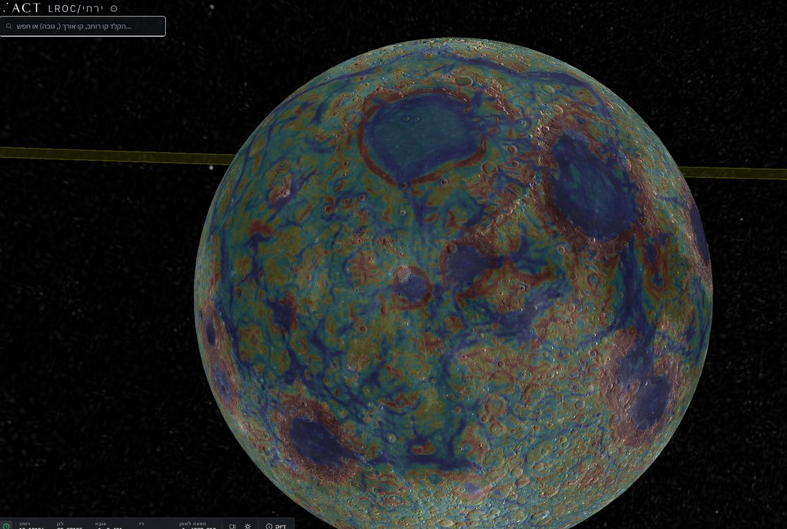
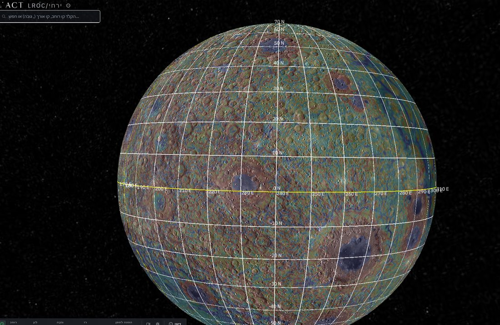
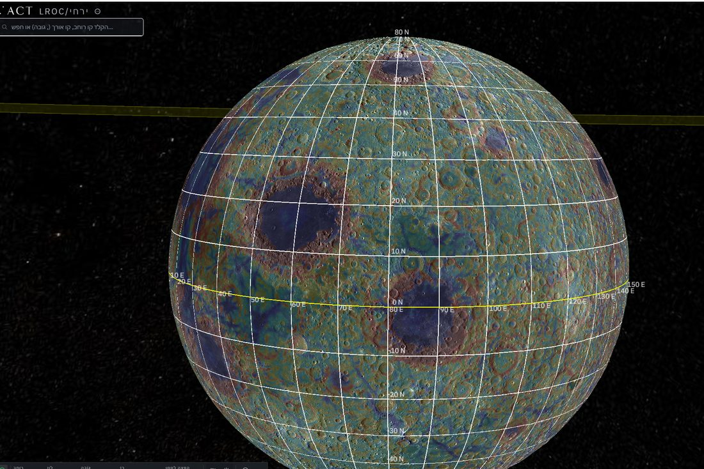
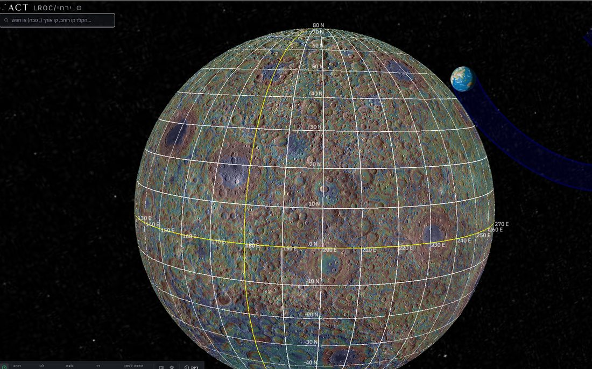
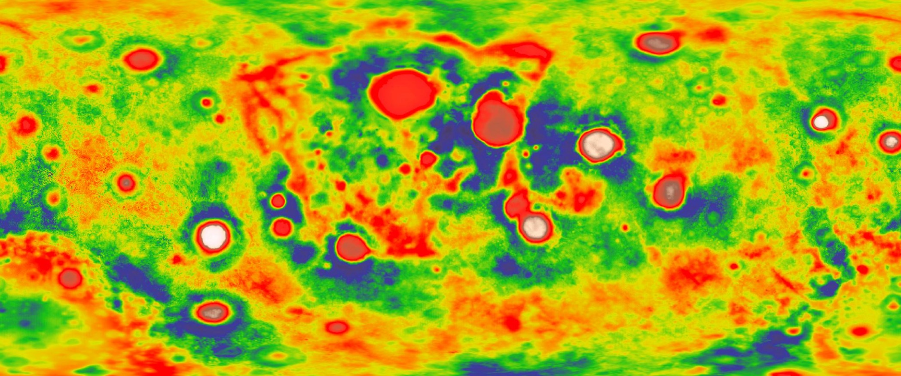
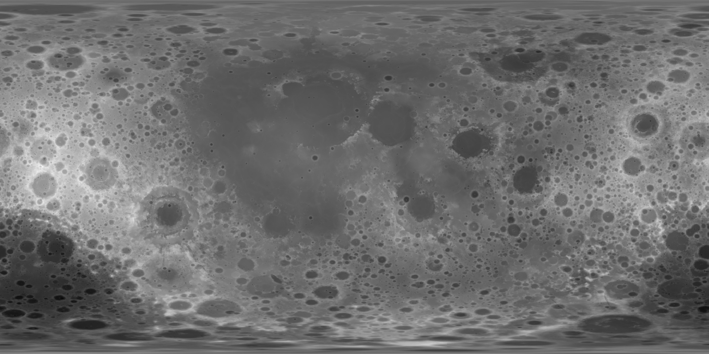
Failure: any of T1–T3 below its refutation line, or T5 failed. Status: open; the observation that would end the model (Paper 1). The alternative to be compared is a single Procellarum-centred thermal and compositional anomaly [S4] — a large region of the near side that was hotter and richer in heat-producing elements than the rest of the Moon. Such an anomaly predicts a near-side–far-side contrast but not the intermediate limb belt or the concentration of ringed basins in it. The limb belt is thus the feature that separates the two explanations: a two-sided contrast is expected by both, a third, intermediate zone with its own kind of basin only by the exposure sequence of the mechanism.
What we now have: the predicted axis orders the lunar crust better than any control axis (T5), the old-crater densities fall in the predicted order with every ratio above its pass threshold (T2), and the thickness ordering is present in all four GRAIL models, with a far-side–contact-disc contrast of 9.65, 10.0, 10.3 and 10.6 km: T1 has not passed, and on Model 1 it falls 0.35 km below its own refutation line (T1). On the current geometry the ordering holds in both quantities. The basin tests T3 and T4 remain to be run.
B.9 Results of the tests instead of a cumulative score
Part B has now set each of the eight requirements against the measurements. The natural next step would be to add the results into one number — so many rows supported, so many open — and read the total as the model’s chance of being right. This section explains why the paper does not do that, and gives instead the state of each requirement in one table: what the data already support, and what remains to be completed.
The table has three columns. The first names the requirement (R1–R8 from Parts A and B; R9–R18 from Part C below). The second states what is supported today; the third states the calculation or measurement still needed before the requirement can be counted as a completed test. A row is therefore not a verdict but a position on the way from “required” to “tested”.
|
Requirement |
What is supported | What is not yet completed |
|---|---|---|
| R1 terrestrial source | Significant isotopic similarity in the systems measured | Multi-system balance of sources and processes |
| R2 little metal | Interior data consistent with a small core | Calculation of the transfer and separation of the metal |
| R3 asymmetry | Asymmetric crust and non-uniform basaltic activity | Quantitative profile and source–crust balance |
| R4 orientation | Present synchronism | Continuity of the connection direction through the evolution |
| R5 preservation order | Histories of crystallisation, impact and late activity | Comparison of units measuring the closure order |
| R6 volatiles | Water in sampled internal magmas | Concentration and phase state sufficient for construction |
| R7 centre of mass | Offset toward the near side; matching sign in the crust example | Joint solution for magnitude, direction and structure |
| R8 exposure zones | T5 passed (rank correlation about the predicted axis on all four models); T2 passed (1.34 / 2.21 / 1.65); T1 not passed (far side minus contact disc 9.65, 10.0, 10.3, 10.6 km on Models 1–4: Model 1 0.35 km below the 10-km refutation line, Models 2–4 between the lines; the ordering holds in all four) | T2 on an age-selected population; T3 and T4 |
| R9–R15, the pear | R15 passed (polar crowding 1.09 1.53 by size, Paper 7) | R9–R14 stated with their tests in §C.6 |
| R16–R18, after the pear | R16 supported (mare floors: 0.8 sharp craters km per million km, against 18.3 on the plains and 207 in the highlands, Paper 6); R17 supported (Paper 8, Figure C.1) | R18 stated with its test in §C.7 |
Reading the table. The first seven rows are the original requirements: each has observational support, and each still lacks the one calculation that would turn a match into a test (named in the third column and collected, with what would fail each, in §D.3). Row R8 carries the only requirement of Part B that has already been run as a statistical test with thresholds fixed in advance (§B.8). Its three numbers are worth reading once more. T5 asks whether the crust is ordered about the sub-Earth axis better than about control axes: a rank correlation of means that, belt by belt outward from the near-side centre, the crust thickens almost without exception, and no control axis does as well. T2 compares the density of large craters in the three zones: the far side has 1.34 times the density of the limb belt and 2.21 times that of the contact disc, and the limb belt 1.65 times that of the disc — the order the model predicts. T1 finds the same order in crustal thickness in all four GRAIL models, with a far-side–contact-disc contrast of 9.65, 10.0, 10.3 and 10.6 km against a pass line of 15 km and a refutation line of 10 km: in Model 1 the difference falls 0.35 km below the refutation line, and Models 2–4 lie between the lines (10.0 on the line). T1 has therefore not passed; on Model 1 it meets its own refutation criterion by 0.35 km (an earlier version placed the contrast above the refutation line and reported T1 as open). The last two rows summarise Part C: of the ten requirements added there, R15, R16 and R17 already have measured support from Papers 6, 7 and 8, and the rest are stated with the test that would decide them.
Why the rows are not added up. R3 and R7 are linked to the same material distribution. Mare cover and part of the age record are also affected by it. Their evidential weight must therefore not be combined as though they were independent experiments, and no “probability of success” should be computed from the number of matching rows alone. The reason is simple. A thick far-side crust (R3) and a centre of mass displaced toward the near side (R7) are not two separate facts about the Moon: the second follows from the first, because light crust replacing dense mantle on one side moves the mass toward the other (§A.7). The maria, which fill the thin near-side crust, and the younger surfaces they carry are a third view of the same distribution. Counting these as three successes would be like weighing one parcel on three scales and reporting three independent weights. A score built from rows would also hide the difference between the three kinds of result the paper keeps apart (Introduction): a result derived from equations, a fit after the fact, and a prediction not yet tested. The table therefore reports each requirement in its own terms, and the reader judges the model by the tests that can fail it.
Further signatures of the rise and the connection
Parts A and B dealt with the seven classical requirements and the exposure zones of R8 — properties any theory of the Moon’s origin must explain. Part C turns to signatures that only the LEF route predicts: the crater record carried up on the shell (C.1), the place on the Earth from which the Moon rose and the place on the Moon where it stayed connected (C.2), the openings through which the material passed (C.3), the manner of release (C.4), the deep structure left behind (C.5), and the requirements added by the pear of Paper 3 and by the papers that followed it (C.6–C.7). Several of these rest on readings of maps, and the part states for each the test that would separate the model’s reading from others.
a suitable appearance in an image can receive several interpretations. The approach: to keep the author’s observations as a basis for hypotheses, and to define tests that separate possible interpretations.
C.1 The craters as a record that rose with the shell
The question of this section is what happened to craters that formed on the shell before the Moon was a sphere. In Paper 3 part of the crater population formed on the shell while it lay flat over the feed and on the flank of the rising dome, and was carried with the shell as the dome rose and closed. The shell here is the parent’s outer crust over the source region, which rose as the skin of the growing body and became its crust (§A.3). Because the shell was stiff, the craters on it travelled with it as marks on a sheet travel when the sheet is lifted.
Closure gathers an existing record onto a smaller area, and Paper 7 has measured what that did to the craters: the rigid shell carried them whole and kept their size, while the rounding of the attached body crowded them together. At the poles, the median crater diameter is 1.06 times that of the equatorial belt at the same size threshold; four of five size tests find the size kept, and none finds shrinking. The crowding, in contrast, rises with crater size, from 1.09 at 20–30 km to 1.53 at 60–100 km (R15, §C.6) — the larger, older craters were present through more of the rounding and were crowded more. The record was crowded, not shrunk. An earlier rule of Paper 3 — a crater on the dome keeping its circle while shrinking to as little as 0.58 of its diameter, and the population densifying by up to 3 — was cancelled after Paper 7’s size tests.
The far side carried the shell and its craters; the limb belt and the contact disc lay under the base and received craters only after their exposure, later. The resulting prediction is that old craters are densest on the far side, less dense in the limb belt and least dense in the cap. This is the order T2 tests in §B.8. This is a population to be identified, not a claim that every crater visible today formed at that stage.
Preservation of circularity requires a limit on non-uniform deformation; a circular shape does not cancel the stress. The geometry is simple. Uniform compression shrinks a circle without turning it into an ellipse, while directional shear or stretching changes its shape; the closure of a dome is the former. A round crater on old far-side ground is therefore what the model expects, and an elongated one in a preferred direction would point to a different history. For the shell to keep its craters at all, it must not flow on the time scale of the rise. Viscosity measures a material’s resistance to flow — honey has a higher viscosity than water, and cold glass a far higher one than honey. Paper 3 defines the rheological constraint: a shell of Pa·s through the rise, stiff enough to hold a crater’s shape while the dome closed beneath it. Hoop compression carried by a crater rim — the squeezing a ring feels when the surface around it is drawn inward — remains a mechanical prediction, with a need to distinguish it from fractures made by later landings and from late subsidence.
Test: select populations by relative age and preservation, measure areal density, diameter distribution and ellipticity, and compare by angular distance from the near-side centre while controlling for burial in basalt; the model expects the far-side (older) population denser than the limb belt’s by at least 1.3, not smaller in median diameter, and circular. The absence of craters on young fill is not by itself a connection scar. The source of the returning material and the energy of its landing belong to Paper 6, to be completed separately.
C.2 A terrestrial source region and a lunar connection point
If the Moon rose from the Earth, two places must be named: where on the Earth it rose, and where on the Moon it stayed attached until the end. This section gives the model’s reading of both, and states what would test it.
The model places the base of the pear, with its openings, near Kiritimati in the Line Islands of Kiribati, about 1.9° north and 157.5° west, above the Pacific large low-velocity province. A large low-velocity province (LLVP) is one of two continent-sized regions at the bottom of the Earth’s mantle, just above the core, in which seismic waves travel more slowly than in the surrounding mantle; one lies beneath the Pacific, the other beneath Africa, and both are read as material hotter or of different composition than their surroundings. The pear leaned back, westward, and north, over the north-central Pacific, where the earlier reading of the author, about 25° north and 165° east, marks its back (Paper 3, §B.1). Paper 9 (The Stripes) adds the tip of the pear, where the Moon was formed: it is centred near 9.3° north and 169.3° east, about 3,760 km west of the base at Kiritimati (3,770 km in an earlier version), and is bracketed by two bends of the stripes 3,360 km apart. In that reading the stripes of the North Pacific are the leading side of the pear, folded when it fell back into the Earth.
On the Moon, the hill from which the body was built is centred near 16.6° north and 13.1° east, and the last contact near 24.1° north and 335.2° east, with Mare Imbrium, the feed opening, inside it (Paper 3, §B.4); Imbrium is the main exit, and Mare Serenitatis the secondary. The earlier reading of the contact, about 23° north and 320° east, is kept in Figure 13 for comparison. These are geomorphological identifications, not palaeogeographic coordinates recovered independently (Figures 12 and 13): they are read from the present shapes of the ground, not reconstructed from the ancient positions of the plates. The existence of oceanic crust today does not prove that a continuous sialic shell existed there at the time of the Moon’s formation and rose from it. Sial is the light upper layer of continental-type crust, rich in silicon and aluminium; beneath it lies sima, a denser layer rich in silicon and magnesium, of the kind that floors the oceans and passes down into the mantle.
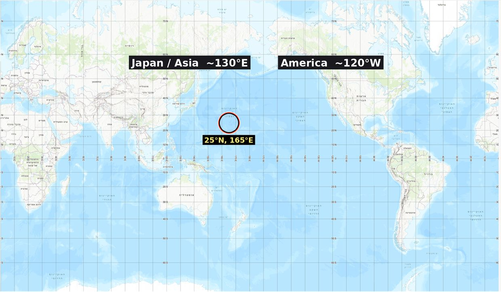
Figure 12 shows the Earth’s side of the reading: the back of the pear in the north-central Pacific, with the base to its east. The present sea floor there is young, so the figure does not claim that the floor itself is a relic of the Moon’s formation; the reading concerns the asymmetry of the deeper lithosphere beneath it.
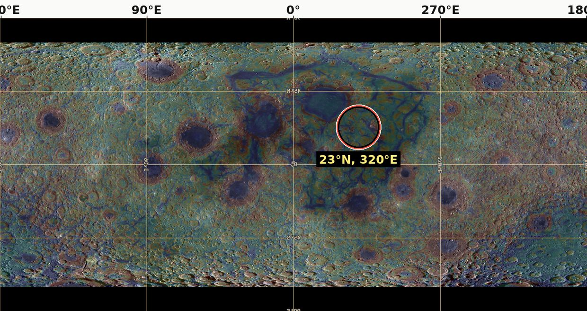
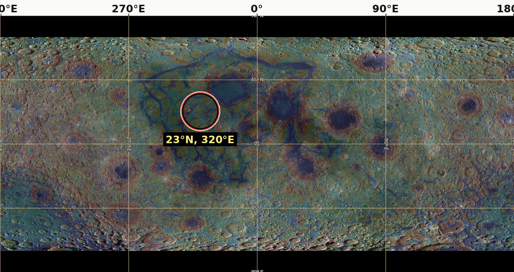
Figure 13 shows the Moon’s side, twice: once with the far side at the centre of the map and once with the near side. The point to note is the latitude. The contact lies near 24° north, and Paper 4 finds that the Moon left from latitude 22.5°; a contact point placed by reading the surface and a release latitude derived from the orbit agree within a few degrees.
Mapping between the two regions is the translation rule of Paper 3: surface area conserved up to uniform compaction, so that the rim of the dome’s base becomes the present limb, the contact becomes a near-side cap of about in the rule of the September tests ( in Paper 3’s current rule, §B.8), and the crown becomes the far side. In plain terms, the rule says where each part of the attached body is found on the round Moon today: what touched the Earth faces the Earth, the edge of the base became the edge of the visible disc, and the top of the dome became the hidden side. Mirror imaging alone is not that mapping: Paper 9 tests a mirror imprint of the contact face at , which is the imprint of the face in contact, not the mapping of the whole source. The mapping rule must be applied to the reconstructed source, and the resulting geometry compared with the lunar map.
Test: define in advance the boundaries of the source and connection regions and the location errors, and then test multiple mapping products that are not the same signs used to select them. The point of this rule is to avoid circular reasoning: a feature used to choose the region cannot also count as evidence that the region is right. The identification of the Pacific is an observational branch to be tested; the calculation of the source area in Paper 3 is not evidence for its ancient location.
C.3Three groups of openings and rings
The openings are the places where the shell was pierced and deep material passed through it. The model distinguishes three groups of openings, and the geometry of Paper 3 gives them a meaning: openings on the crown, exposed first and ejecting while exposed; openings on the flank, exposed as the dome rose; and openings under the base, covered until release, through which material only passed. The three groups differ in one thing: how long each was open to space. A crown opening could throw material out for most of the construction; a base opening was sealed against the Earth and became visible only when the Moon left. The classification stands; however, the division of the maria into groups is not a determination that every basaltic basin is an opening. Even after the connection to the Earth was cut, lunar structures formed earlier can influence later volcanism originating in the Moon’s interior.
A gravitational ring is not necessarily a raised rim. On a gravity map a ring is a circle of excess or deficit mass, which may lie below the surface; a rim is a circle of high ground. Determining the former requires gravity data and a density model; determining the latter requires topography. There is no general law that only material of intermediate viscosity forms a ring. Geological classification, rim height, subsurface structure and composition are therefore required, not only a colour on a gravity-gradient map.
Test: fix location groups before testing the rings, publish a full basin list and a height index relative to the surroundings, and compare with models of impact, fill, subsidence and magmatic intrusion. A mismatch fails the classification hypothesis; it does not cancel the corotation equation. The model is built in levels: the corotation equation of Paper 2, which places the release, does not rest on how the openings are classified, so a failure at this level is confined to it.
C.4 Release and rounding
The question here is how the Moon came free and in what state it left. Two distances matter. The corotation radius is the distance from the Earth at which a body turning with the Earth, once per Earth day, moves at exactly the speed of a free circular orbit; inside it, a loose body falls back, and beyond it, it is carried outward. At release, with a day of 5.77 hours, it lay at 16,399 km on the equator, about 2.6 Earth radii. The Roche limit is the distance inside which the difference of the Earth’s pull across a body exceeds the body’s own gravity holding it together.
Paper 2 separates corotation from tidal survival, and Paper 3 examines the connection. Comparing the self-gravity acceleration with the tidal gradient can yield a scale resembling the rigid Roche limit; it does not prove the rounding rate, the failure of the connection or the stability of a hot body. A body can lie beyond the Roche limit and still be torn if it is weak or hot; the comparison is a scale, not a history.
The order is fixed in the series: the body rounded while attached, and at release its shell was rigid and round (Paper 7). It separated by peeling: over the 6,000-km base the sial it sat on peeled from the sima and went with it; over the 3,000-km contact the heat melted the sial away and smoothed the surface; and when the Moon’s centre of mass reached the corotation line the corotation forces pulled the last of the contact free (Paper 3, §C.4a, C.5). There was no neck.
Peeling is the key word, and it describes a parting along the weakest layer. The body sat on the Earth’s sial, and beneath the sial lay the sima; the boundary between them, hot and mobile, was the weakest surface in the connection (the environment table). As the body rounded, its base came away along that boundary from the edge inward, as a strip of tape lifted from a painted wall takes the paint with it and leaves the plaster behind: the body took the sial and left the sima. The parting narrowed the attached area from the 6,000-km base to the 3,000-km contact. There the heat of the feed melted the sial instead of lifting it, and the ground was smoothed. The last step needed no blow and no thin stalk: when the body’s centre of mass reached the corotation radius, the motion it already had with the Earth equalled orbital motion, and the corotation forces drew the remaining contact apart.
Paper 11 requires the signatures of this order — a peeled limb belt, a smoothed contact region opened by the maria — to be identified in the crust and the gravity field. The first is the limb belt of R8, which in the model carries the peeled sial; the second is the contact disc, with the thinnest crust and the strongest unringed mass concentrations (Figures 6 and 7).
C.5 The deep anomaly and north–south asymmetry
This section concerns what the Moon’s departure may have left deep in the Earth. The link between the ancient Lobe A and present deep structures remains a research direction. Lobe A is the part of the deep reservoir that lay beneath the source region and fed the rising body; the model reads its present remnant as the Pacific low-velocity province, with the African province as the undisturbed lobe opposite (R11, §C.6). Low seismic velocity is not a direct measurement of a mass deficit, and there is no model in this paper carrying a particular anomaly through billions of years of mixing and differentiation. Seismic waves slow down both in hotter material and in material of different composition, and a slow region can be denser than its surroundings, not lighter; a velocity map alone does not say where mass is missing. Similarly, north–south asymmetry is to be examined after separating the near–far asymmetry and the effect of large basins; SPA alone must not be used to verify it. The South Pole–Aitken basin (SPA) is so large that by itself it makes the south look different from the north; a north–south signal must survive without it.
C.6Requirements added by the pear
Paper 3 now gives the connection its shape: one bulge of the Earth’s own material, drawn into a pear that holds itself by its own gravity, whose tip is the dome and becomes the Moon, and which falls back into the Earth when the Moon leaves. That account places further requirements on the Moon and on the Earth. They are stated here in the same form as R1–R8, each with the finding that would defeat it.
The pear is one continuous body: a broad base on the Earth, a body narrowing outward, and a tip where the Moon grew. Its requirements fall on both ends. On the Earth’s side, the pear must be able to stand (R9), must return without leaving debris in orbit (R10), and must have left a mark where it returned (R11). On the Moon’s side, the tearing of the sial must have left a chemical edge (R12), the core must record how deep the feed reached (R13), and nothing from outside the Earth may be found in the Moon (R14). R15 records how the rounding of the attached body crowded the craters.
| Requirement | What the pear requires | Test | Refuted if |
|---|---|---|---|
| R9 — a pear in its own gravity | A connection about 9,000 km wide at the Earth’s surface, narrowing in a single arc to the 3,000-km contact, holding itself by its own gravity and lying wholly inside the corotation line (Paper 3, §C.7) | The equilibrium figure of a rotating, internally pressurised Earth with a body at its tip (Paper 3, §C.9) | No self-holding figure exists for any admissible density and spin |
| R10 — the pear returns | About nine lunar masses, some 11% of the Earth’s mass (Paper 9 gives the range seven to twelve), fall back whole when the Moon leaves; no residue of the connection stays in orbit | A returned, iron-rich pile in the lowermost mantle beneath the base of the pear; no orbiting remnant | A remnant of the connection in orbit, or no returned mass beneath the source |
| R11 — the Pacific low-velocity province | The base of the pear, near Kiritimati (about 1.9°N, 157.5°W), lies above the Pacific province, the returned pile; the African province is the undisturbed lobe opposite (Paper 3, Part E) | The position of the base against the province’s outline in published models; the Pacific province iron-richer, lower and broader than the African | The base outside the province, or the two provinces alike in composition and shape |
| R12 — KREEP | The torn edge of the sial folded inward at the rim of the base, carrying potassium, rare-earth elements and phosphorus into the near side around Procellarum (Paper 3, §C.10) | The position of KREEP against the rim of the base; the composition of the most primitive anorthosites, which must have lost the potassium and thorium of the Earth’s sial | KREEP unrelated to the rim, or primitive anorthosites that keep a terrestrial sialic signature |
| R13 — the core as a gauge | The small lunar core, one to two per cent of the mass, measures how close the feed came to the descending iron (Paper 3, §C.10; R2) | A transport model of iron in the rising feed, with the depth of the source | A core fraction that requires a source at the Earth’s core, or one with no iron at all |
| R14 — no foreign material | The Moon is built of the Earth alone: no component from an impactor | A multi-system isotope balance (R1) and plume basalts from the Pacific province carrying the Earth’s own signature (Paper 3, §E.4) | A resolved non-terrestrial component in the bulk Moon or in the Pacific plumes |
| R15 — polar crowding by size | The rounding of the attached body crowded the craters at the poles, the older and larger the more (Paper 7) | The clean pole-to-equator ratio by crater size, maria and South Pole–Aitken removed: 1.09 at 20–30 km rising to 1.53 at 60–100 km | No rise of the ratio with crater size above 20 km |
R15 is already measured and passes (Paper 7, §D.1–D.2). R10, R11 and R14 share the Earth’s side of the account: what rose and returned, and where it lies now.
Reading the rows. R9. The pear is not held up by the strength of its material — no material is strong enough at this scale — but, like the Earth’s own equatorial bulge, by the balance of its gravity, its internal pressure and the spin. Such a balanced shape is called an equilibrium figure. The requirement is that a figure of this kind exists, 9,000 km wide at the base and narrowing to the 3,000-km contact, with every part of it inside the corotation line: inside that line every part turns more slowly than orbital speed and stays bound to the Earth, so that only the tip, on reaching the line, is freed. The model fails if no density and spin within the admissible range give such a figure.
R10. When the tip leaves, the rest of the pear — about nine lunar masses — has nothing to hold it out and falls back into the Earth. Since all of it lay inside the corotation line, none of it can stay in orbit. The test looks for where it went: a pile of returned, iron-rich material at the base of the mantle beneath the source. The pear, absorbed into the Earth, also left wrinkles: the stripes on its leading side and the crumpled arcs on its back (Paper 9); Paper 9’s tests are listed there (Part G) and are not numbered here as a requirement.
R11. The returned pile is identified with the Pacific low-velocity province. The model therefore requires the base of the pear, read from the surface near Kiritimati, to lie over that province, and the Pacific province to differ from the African one, which the model reads as the undisturbed lobe opposite: richer in iron, lower and broader. The test compares the base with the outline of the province in the published seismic models of the lowermost mantle.
R12. KREEP is a component of lunar material rich in potassium (chemical symbol K), the rare-earth elements (REE) and phosphorus (P), together with thorium and uranium. These elements do not fit easily into the crystals of common minerals and therefore gather in the last liquid to solidify; on the Earth they are concentrated in the continental crust, the sial. On the Moon, KREEP is concentrated on the near side around Oceanus Procellarum. The model reads it as the torn edge of the sial, folded inward at the rim of the base when the body peeled away. Anorthosite is a light material made almost entirely of the mineral plagioclase, and forms the lunar highlands; the most primitive lunar anorthosites are very poor in potassium and thorium. If they come from the Earth’s sial, those elements must have left them — into the folded edge. The model fails if KREEP bears no relation to the rim of the base, or if the primitive anorthosites keep the sial’s signature.
R13. The lunar core is small, one to two per cent of the Moon’s mass (R2). In the model this measures depth: the feed rose through a pear into which the Earth’s iron was descending, and the closer the source lay to that iron, the more metal the Moon received. The small core says that the feed came near the descending iron but not from the Earth’s core itself. A transport model of iron in the rising feed must reproduce the fraction; a core that requires a source at the Earth’s core, or no iron at all, fails the requirement.
R14. In the giant-impact model the Moon contains material of the impactor, a body from outside the Earth. In LEF the Moon is the Earth’s material alone. The test is twofold: the isotope balance of R1, and the basalts of plumes — columns of hot mantle rising from the deep — that come up from the Pacific province, which in the model is the returned pear and should carry the Earth’s own signature. A resolved non-terrestrial component in either place refutes the requirement.
R15. At the poles there are more craters per unit area than near the equator, and the excess grows with crater size: 1.09 for craters of 20–30 km, 1.53 for 60–100 km. The ratio is “clean”: the maria, which are poor in craters, and South Pole–Aitken are removed from both sides of the comparison, so that like is compared with like. In the model the larger craters are the older ones; they were on the body through more of its rounding and were crowded more. This is the only requirement of C.6 already measured, and it passes.
C.7 Requirements added after the pear
Three papers closed after the pear add three requirements: the maria as the openings (Papers 5 and 6), the far-side mark of the heat that passed through them (Paper 8), and the same idea on Mars (Paper 10). Each takes a part of the model already described — the openings of C.3, the heat of the feed, a moon made of its parent’s interior — and asks for its trace in a place where it can be measured.
| Requirement | What is required | Test | Refuted if |
|---|---|---|---|
| R16 — the 34 maria are the openings | The maria are 34 openings over feed domes on the near side (Paper 5, Appendix A); the dark plains — Procellarum, Tranquillitatis and their like — are crust melted in place, not maria. The returning material that made the craters came out through the openings, and craters that landed on an active mare floor melted (Paper 6) | Sharp craters km on mare floors against plains and highlands, on the 34 footprints; melted fraction by size and by time of landing | Mare floors as rich in sharp craters as plains of the same age; craters on the floors not melted but buried under later flows |
| R17 — two exits and a dome to their south | The heat beneath the far side had two exits, opposite Imbrium (main) and Serenitatis (secondary). The centre of the dome, the crater minimum and the hot centre lie south of both: the direction is set by the position of the pear and the forces of the Earth’s rotation, which push the flow perpendicular to the spin axis, and the rounding of the elongated body enlarged the distance (17–21° at the flattened stage, 24–29° today) (Paper 8, §C.3–C.4) | The centres of SPA on one map: exits in the north with a small dome of thin crust over each, the dome and the minimum in the middle, the dense mass and the lowest ground in the south (Paper 8, Figure C.1) | A crater deficit and a thin-crust centre unrelated to the points opposite the near-side openings, or lying north of them |
| R18 — the Martian moons from one equatorial conduit | Both moons were fired as plugs of Martian crust from one conduit at Pavonis Mons (1.48°N, 247.04°E), on the equator, by trapped gas, and completed their orbits in a ring of condensed steam (Paper 10, §C–G) | The composition of Phobos against the Martian line; a mass deficit beneath the Pavonis caldera; the inclinations of both moons, within 2° of the equator | Phobos of non-Martian material or with an impactor component; an excess of mass beneath the caldera |
Reading the rows. R16. A mare, in the model, is an opening over a feed dome — a place where deep material came through the shell — and Paper 5 lists 34 of them on the near side. The broad dark plains such as Procellarum and Tranquillitatis are not openings but crust melted in place. Because the openings were the source of the returning material that made the craters, and because a crater that landed on a still-molten mare floor melted into it, mare floors should be nearly free of sharp craters, those whose rims are still fresh. Paper 6 counts 0.8 sharp craters of 20 km and more per million km on the mare floors, against 18.3 on the plains and 207 in the highlands: the mare floors carry more than twenty times fewer than the plains. The requirement fails if mare floors prove as rich in sharp craters as plains of the same age, or if their shallow craters turn out to be buried under later flows rather than melted.
R17. The heat that passed through the near-side openings left its mark on the opposite side of the Moon, in South Pole–Aitken (SPA). The two exits of that heat lie opposite Imbrium, the main exit, and Serenitatis, the secondary. The model requires the centre of the dome, the area poorest in craters and the hot centre to lie south of both points, for two reasons: the pear’s position and the Earth’s rotation pushed the flow perpendicular to the spin axis, and the rounding of the elongated body increased the distances between surface points — from 17–21° at the flattened stage to 24–29° today. This is a change of the figure, from flattened to round, which changes the distances between points on the surface; the picture changes, not the place of SPA. Figure C.1 of Paper 8 places all the centres of SPA on one map in the predicted order, from the exits in the north to the dense mass and lowest ground in the south. The requirement fails if the crater deficit and thin-crust centre bear no relation to the points opposite the openings, or lie north of them.
R18. The same idea, followed on Mars by another route, makes Phobos and Deimos of Mars itself. A young Mars, 1.5 times its present radius and turning in five hours, fired two plugs of its crust from one conduit at Pavonis Mons, pushed by trapped gas; a ring of condensed steam gave them the sideways speed they lacked and drew their orbits into the equatorial plane. A body starts on an orbit inclined by about the latitude of its launch site, and Pavonis, at 1.48°N (IAU Gazetteer of Planetary Nomenclature), is the closest of the four Tharsis volcanoes to the equator; both moons orbit within 2° of it. The chamber that fired them should have left a mass deficit beneath the caldera, and the moons should carry Martian material without an impactor component. The requirement fails if the samples of Phobos returned by MMX show a non-Martian or mixed source, or if the gravity beneath the Pavonis caldera shows an excess of mass. Paper 10 is a separate test; its outcome does not change the parameters of the Earth–Moon case.
The Earth’s axis may also have changed after the separation, which would make SPA appear out of line with the burner today; the axes are deliberately left for future work and are not a requirement of this paper.
With Part C, the paper has stated all eighteen requirements: seven classical properties, the exposure zones, the seven that follow from the pear, and the three added after it. Part D collects what would fail each, and what remains open.
Consistency among the papers, refutation and conclusions
a match on the lunar surface does not close a physical gap in the construction mechanism. A Moon that looks the way the model says it should is necessary, but it is not enough: the steps that built it — the feed from below, the rise of the shell, the release — must also work as physics. The approach: use the same set of conditions across the papers and make the dependencies between their claims explicit, so that the reader can see which result rests on which, and which single finding would bring down which part.
Parts A–C stated the requirements one by one: R1–R8 for the Moon built while attached, R9–R15 added by the pear, and R16–R18 added by the papers that closed after it. Part D steps back and treats them as one system. It does four things. It lists what each paper of the series hands to this one, and what each still leaves open (§D.1). It takes up the time scale, where an isotope clock places a hard constraint on any long construction (§D.2). It gathers every test into one refutation map, so that the reader can see in a single table what would defeat each claim and how much would fall with it (§D.3). It then states what is new in the work (§D.4) and closes with the conclusions, each followed by what it means (§D.5).
D.1 The conditions Paper 11 receives from the series
The question this section answers is: what does this paper take from the other papers as given, and what does it still have to require? The series divides the work. Paper 2 sets the orbital conditions, Paper 3 builds the mechanism, Papers 4–8 follow the Moon after release and read its surface, and Paper 10 follows the same idea on Mars. Each of them passes a result to this paper, and each leaves a condition that a result alone does not settle.
The table is read row by row and from left to right. The first column names the paper. The second gives the result that paper passes here — what this paper may use as an input. The third gives the condition still required: the part of the claim that the result does not yet prove, and that Paper 11 therefore keeps as a requirement with its own test. The rows are in the order of the papers; the shading groups them by kind. Navy-tinted rows are the papers that build and release the body (Papers 2–4); red-tinted rows are the papers that read the Moon’s surface (Papers 5–8); plain rows are the further test on Mars and this paper itself. Reading down the table therefore follows the scenario itself: from the mechanism, to the surface it left, to the tests outside it.
|
Paper |
Result passed here | Condition still required |
|---|---|---|
| 2 — LEF Mechanism in Principle: corotation | Orbital and momentum states in explicit mass and spin definitions | Survival and release do not follow from the equality of velocities alone |
| 3 — LEF Mechanism in Practice, Part A | An example state with a positive radial pressure remainder | The radial balance passes from a passage radius of about 1,000 km, where the passage already holds 0.46 lunar masses and must carry a lateral load of order N; the connection is therefore the broad base of the dome |
| 3 — LEF Mechanism in Practice, Part B | The hemisphere: density 1,300 kg/m³, surface three times the far hemisphere, the translation rule | The exposure zones and the crust thickening follow from one rule; the shell’s viscosity ( Pa·s) is a requirement, not a measurement |
| 4 — The Orbit: the orbit after release | Release at 22.5°, 17,287 km, on a circular orbit; the evolution of orbit and orientation | Requires the release conditions of Papers 2–3 |
| 5 — The Maria | The 34 maria as openings over feed domes; the dark plains are melted crust, not maria; the classification of R8 | R16 (§C.7) |
| 6 — The Craters | The returning material and its landing on the shell; the 34 maria as its source; craters on mare floors melted | The velocity of the returning material is not proved here; R16 (§C.7) |
| 7 — The Poles | The rounding of the attached body; polar crowding rising with crater size | The requirement of §C.6 |
| 8 — South Pole–Aitken | The crater-poor centre as the mark of a heat source opposite the near-side openings, with two exits (Imbrium and Serenitatis); the dome south of both | R17 (§C.7) |
| 10 — Mars | A further test, in Martian parameters | Two plugs fired from one conduit by a fast, expanded Mars; a ring completes their orbits |
| 11 — this paper, The Requirements | Observational matches and tests | They do not replace the closure of feed, rise and release |
What the rows say. The corotation radius of Paper 2 is the distance from the Earth’s centre at which a body turning once with the Earth’s spin moves at exactly the speed of a free circular orbit; at the 5.77-hour spin of release it lies at 16,399 km on the equator. Paper 2 defines the states of mass, spin and angular momentum — the quantity of rotation a spinning or orbiting system carries, which no internal process can create or destroy — in which that equality holds. The row’s condition is that equal velocities are only a meeting point: they do not by themselves show that the body survived the Earth’s tides or let go. That is why release is kept as a requirement here.
The two rows of Paper 3 carry the mechanism. In Part A, the radial pressure remainder is the outward push of the deep material left over after the weight of the column above it is paid; a positive remainder means the feed can rise. The condition shows why the connection cannot be a narrow stem: the balance is met only where the passage is about 1,000 km in radius, and there it already holds 0.46 lunar masses and must carry a sideways load of order N. A load of that size is carried by the whole base of the dome, which is why the series speaks of a broad base and not a neck. In Part B the body is a hemisphere of mean density 1,300 kg/m³, whose curved surface is three times the area of the far hemisphere it closes onto; when that surface closes, the shell on it thickens about threefold, and the same rule that maps the dome onto the sphere (the translation rule) gives both the exposure zones of R8 and the thick far-side crust. Viscosity is a material’s resistance to flow; a shell of Pa·s flows so slowly that a crater on it keeps its circle while the dome rises and closes. That value is what the shell must have for the record to survive; it is required, not measured.
Paper 4 receives the Moon at release — at 22.5° latitude, where the corotation line lies 17,287 km from the Earth’s centre, on a circular orbit — and follows it outward; its whole account starts from the release conditions of Papers 2–3, so it inherits their open condition. Papers 5 and 6 together give the near-side openings their role: the 34 maria are openings over feed domes, the material that made the craters came out through them and landed on the shell, and craters that landed on an active mare floor melted. What they hand on as a requirement is R16, and Paper 6 states that the velocity of the returning material is not proved there. Paper 7 measured the rounding of the attached body in the craters themselves: the shell carried its craters whole, and the crowding toward the poles rises with crater size, from 1.09 at 20–30 km to 1.53 at 60–100 km (R15, §C.6). Paper 8 reads the crater-poor centre of South Pole–Aitken as the far-side mark of the heat that left through the near-side openings, with Imbrium the main exit and Serenitatis the secondary, and the dome lying south of both; that reading becomes R17.
Paper 10 follows the idea on a second planet with Martian parameters: a fast, expanded Mars fired two plugs of its own crust from one conduit, and a ring completed their orbits. The last row is this paper. Its matches and tests check the outcome; they cannot stand in for the physics of feed, rise and release that the earlier rows require. Paper 9 (The Stripes) does not appear as a row: its findings on the Earth’s side — the tip of the pear and the stripes on its leading side — enter this paper in §C.2 and §C.6, and its tests are listed in that paper rather than numbered here.
The values in the rows for Paper 3 are test cases defined there, not a single state of the system for the whole duration of the scenario: the density of 1,300 kg/m³, the passage of 1,000 km and the load of order N describe one instant chosen to test the balance, and the body changes through the rise. The viscosity of the interface at the base of the shell must not be transferred to the surface preserving craters. The two belong to different layers: the interface between the shell and the interior is the weakest layer of the body, and its softness is what lets the shell ride up on the dome, while the surface that keeps the craters must be stiff. The shell’s own viscosity, of order Pa·s or more through the rise, is a requirement, not a measured material datum.
D.2 The chronology remains a central constraint
The question this section answers is whether the time scale of the scenario — a construction lasting hundreds of millions of years — can be reconciled with the isotope clocks that date the separation of metal from silicate in the early Earth and Moon.
The Hf–W system constrains metal–silicate separation processes. In plain words it is a clock that stops ticking after a few tens of millions of years. A radioactive isotope of hafnium decays into an isotope of tungsten. Hafnium stays with the silicate when metal separates from it, while tungsten prefers the metal and goes down with it into a core. If metal separates while the radioactive hafnium is still alive, the silicate left behind keeps its hafnium, and as that hafnium decays the silicate gains extra tungsten of the daughter isotope; the size of that excess records how early the separation happened. Once the parent is used up, no new excess can be made, and the clock stops. Its interpretation depends on the accretion history and the degree of chemical equilibration [S11]: how much of the incoming metal exchanged tungsten with the silicate it passed through before it sank. It does not follow that saying “the equilibration is partial” suffices to permit any differentiation duration. Partial equilibration widens the range of readings, but it must still be computed for a stated history; it is not a free parameter that can be set to fit any time scale.
For clarification of the time scale only, assuming a half-life of 8.9 million years:
Equation (10) is the law of radioactive decay written with the half-life. is the amount of the radioactive parent at the start, the amount left after a time , and 8.9 Myr is the half-life — the time in which half of whatever is present decays. The exponent counts how many half-lives have passed, and each one halves what remains. After a handful of half-lives, a few tens of millions of years, almost nothing of the parent is left. That is the sense in which the clock stops.
After 600 million years a fraction of about of the radioactive parent remains. 600 million years is many dozens of half-lives, and halving that many times leaves, in practice, nothing: the clock has been stopped for most of the window. This window is the series’ rough timeline: about 600 Myr from the start of the bulge to release at 3.873 Ga — some 400 Myr for the bulge and the pear, about 100 Myr for the flattening, and about 100 Myr more to release. An extinct system can still preserve differences created earlier; it cannot be treated as a newly starting clock at the end of the window. The tungsten signatures the Moon carries were therefore set while the parent was still alive, early in the window, and the scenario must carry them through the rest of it without resetting them. A reservoir history must compute the signatures, the fraction of metal transferred and the angular momentum within a consistent chronology: one account of where each reservoir was, when its metal separated, and how much of it reached the Moon, with the same times used for all three. Status: to be computed. This is the requirement the chronology places on the model, and it is listed with the other open calculations rather than assumed met.
D.3 Refutation map
The question this section answers is: what would show the model to be wrong, and how much of it would fall? Every requirement of Parts A–C is collected here in one table. The first column names the claim and, in brackets, the requirement or section where it is stated. The second gives the explicit requirement — what the model must deliver. The third gives the test and the condition under which it fails. The fourth gives the scope of the conclusion: how far a failure reaches. The scope column matters as much as the failure column. Most failures remove one branch of the account and leave the rest standing; one row — the exposure zones, shaded in the table — is the observation that would end the model.
|
Claim tested |
Explicit requirement | Test and failure condition | Scope of the conclusion |
|---|---|---|---|
| Terrestrial source (R1) | Multi-system match after permitted separation processes | No solution within the source domains and measurement errors | Damages the exclusive source in the version tested |
| Metal supply (R2) | Range of consistent with interior data | Transport and differentiation predict a fraction outside the permitted range | Damages the transfer mechanism of Paper 3 |
| Volatiles and feed (R6) | Pressure, density, flow and energy conditions pass together | No overlap between supported material states and transport requirements | Failure of the given construction route |
| Rise and preservation (§C.1) | The shell rises with the dome and preserves the record attributed to it | No shared rheological domain for the two requirements | Failure of the dome version in Paper 3 |
| Crust and mass (R3) | The same mass gives a possible thickness and composition | Excess or deficit of material not resolved within permitted fluxes | Failure of the external–internal balance |
| Closure order (R5) | Preservation order between identified units | Parallel dating requires the opposite order | Failure of the particular chronological prediction |
| Crust and centre of mass (R7) | Density and thickness give a matching offset vector | No joint solution within a supported error frame | Failure of the particular structural explanation |
| Exposure zones (R8) | Ordering of thickness, basin class and oldest craters by angular distance from the near-side centre | No such ordering, or ordering about another axis | Failure of the dome geometry of Paper 1 — the observation that ends the model |
| Rings and openings (§C.3) | Measurable difference between groups fixed in advance | The difference is absent or fully explained by the fixed controls | Failure of the morphological branch |
| Openings and craters (R16) | The 34 maria are the openings and the source of the returning material | Mare floors as rich in sharp craters as plains of the same age | Failure of the source of the returning material |
| The far-side mark (R17) | The SPA centres ordered south of the two exits | No ordering about the points opposite the openings | Failure of the burner reading of SPA |
| Mars (R18) | Both moons fired from one equatorial conduit, Pavonis | Non-Martian Phobos; excess mass beneath the caldera | Failure of the Martian test, without changing the terrestrial parameters |
The rows in words.
Terrestrial source. The Moon’s isotopes must match terrestrial material in several systems at once — oxygen, titanium, chromium, tungsten and the volatile elements — after the separation and evaporation the scenario permits. The test fails if no mixture of the Earth’s source domains fits all of them within the measurement errors. The damage is to the claim that the Earth is the only source, in the version tested.
Metal supply. is the fraction of the lunar mass in the core, given by equation (1); the seismic core is consistent with about 1.4%. If the transport and separation of metal in the feed predict a fraction outside the range the interior data allow, the transfer mechanism of Paper 3 fails, not the whole model.
Volatiles and feed. The mechanism uses volatiles to lower the density of the feed, change its rheology and supply its pressure (§A.6); the measured water of lunar melt inclusions shows that volatiles were inside the Moon, not yet that they were there in the amount and phase the transport needs (§B.6). Pressure, density, flow and energy must all be met by the same material state. If no state that the data support also meets the transport requirements, this construction route fails.
Rise and preservation. The same shell must ride up with the dome and keep its craters circular. A rheology — the way a material deforms and flows under load — must exist that allows both: a weak interface beneath, a stiff shell of Pa·s above. If no such range exists, the dome version of Paper 3 fails.
Crust and mass. The shell on the dome ( kg) must supply the far-side crust ( kg, §B.3), with the near-side crust a separate term. An excess or deficit that no permitted flux of material resolves breaks the balance between what came from outside the body and what formed inside it.
Closure order. The units closed and were preserved in a set order; the model predicts the far-side highland crust older than comparable near-side highland crust. If parallel dating of comparable units requires the opposite order, that chronological prediction fails.
Crust and centre of mass. The Moon’s centre of mass lies about 2 km from the centre of its figure, toward the Earth. The density and thickness of the crust must give an offset matching it in both size and direction. If no joint solution exists within a supported error frame, that structural explanation fails.
Exposure zones. The dome closed in a fixed sequence, so crustal thickness, the class of basins and the oldest craters must be ordered by angular distance from the near-side centre — contact disc, limb belt, far side — and by no other axis. This is the strongest single prediction of the mechanism. If the ordering is absent, or holds about some other axis, the geometry of the dome fails, and with it the model. Part B reports where the test stands: T5 and T2 passed; T1 has not passed — the far side exceeds the contact disc by 9.65, 10.0, 10.3 and 10.6 km in the four GRAIL models, so that on Model 1 the difference falls 0.35 km below the 10-km refutation line and Models 2–4 lie between the lines, while the ordering holds in all four (§B.8, §B.9; an earlier version reported T1 as open).
Rings and openings. The openings are divided into groups — crown, flank and under the base — fixed before the rings are examined. The groups must differ measurably. If they do not, or the difference is fully explained by the controls fixed in advance, the morphological branch fails; as §C.3 states, this does not cancel the corotation equation.
Openings and craters (R16). If the maria were the openings and the source of the returning material, mare floors must be poor in sharp craters, because craters that landed on an active floor melted. Paper 6 measured 0.8 sharp craters km per million km on the floors, against 18.3 on the plains and 207 in the highlands (§B.9). Floors as rich in sharp craters as plains of the same age would defeat the source of the returning material.
The far-side mark (R17). The centres of South Pole–Aitken must be ordered south of the points opposite the two exits, Imbrium and Serenitatis. Paper 8 maps them so (Figure C.1). No ordering about the points opposite the openings would defeat the reading of SPA as the mark of the burner.
Mars (R18). Both moons must be Martian material fired from one conduit on the equator, at Pavonis Mons. A Phobos of non-Martian or mixed material, or an excess of mass beneath the Pavonis caldera, fails the Martian test; it does not change the parameters found for the Earth.
“No solution” requires a defined and justified parameter domain, not a test of a single point: a claim that nothing works must show that nothing works across the whole range the data allow. Conversely, success at one parameter choice does not establish a complete formation route. Presenting the sample, errors, ranges and computation process allows the reader to assess the claim according to the review requirement: Prediction → Detailed → Robust → Evaluable → Falsifiable. Read in order, the chain asks that each claim be a prediction, stated in enough detail to be computed, robust to reasonable changes of its inputs, evaluable by an outside reader with the data given, and capable of failing. The map above is built so that every row meets the last step.
D.4The novelty of the work
The question here is what the work adds, and what it does not claim. Gravity, conservation of mass, differentiation, crustal cooling and tides are existing physics. The idea that a hot Earth can create a lunar asymmetry is also not new [S5]: Roy and colleagues proposed that the glow of a young, hot Earth heated the near side and so explains the thicker far-side highlands. The LEF contribution examined is the link between deep feed during contact and the rise of the outer shell as the surface of the same body, and the requirement that the two together produce a matching mass, structure and record. In other words, the new element is not any single process but their combination in one body: the interior filled from below while its skin was the Earth’s own shell lifted on the dome.
The contribution of this paper is the formulation of the tests in the same framework, in particular linking the prediction of crustal thickness to the centre-of-mass offset and the shell inventory to the crust mass. The equations themselves derive from standard physics; their application to the scenario is not a claim to have discovered a new law. The paper claims no historical exclusivity for every component before a comprehensive literature review of that component. Appendix B sets out, component by component, what is standard physics, what is prior observation or prior art, and what is the model’s own hypothesis.
D.5 Conclusions
Each conclusion is followed by what it means for the model.
A terrestrial source, little metal, volatiles and asymmetry are observational targets that the scenario must explain together. Their existence does not by itself validate the transport route. What this means: the four properties are what any account must produce; the LEF route earns them only when the feed, the metal transfer and the shell are computed to give all four at once.
Present synchronism is a weak consistency test; preservation of the connection direction requires dynamical evolution after release. What this means: the Moon turning one face to the Earth today agrees with a body that left with its contact face toward the parent, but tides alone would also give it; the model must show that the face it left with is the face it keeps.
Crust, impact and basalt ages measure different processes. The closure order and the construction duration are not decided by the basalt data. What this means: the age of a crust’s crystallisation, the age the literature gives to a basin-forming event, and the age of the basalt that filled a basin are three different clocks; the order in which the body closed must be read from comparable units on both sides, not from the basalts.
The shell of the dome supplies the far-side crust — against kg ( in an earlier version) — and the near-side crust is the sial of the base, peeled away with the body; the two are separate terms of the balance. What this means: the two masses agree to about 10% (7% in the earlier version) with no parameter adjusted between them, and the near side has its own source: the sial, the light silicon- and aluminium-rich outer layer of the early Earth on which the body sat, which peeled from the denser layer beneath it and left with the Moon.
The contribution of a thick, light far-side crust to the centre of mass points toward the thin side under the conditions derived. The total magnitude and direction require a shared density model. What this means: replacing dense mantle with light crust on the far side moves the centre of mass toward the near side, as observed; the size of the offset, 1.24–3.11 km in the example of §B.7, becomes a test only when one density model fixes thickness and offset together.
The carried crater record, the exception of the connection region and the classification of openings stand as predictions for testing with controls on impact, burial and deformation. What this means: the craters the shell carried whole, the contact region — centred at 24.1°N 335.2°E, with Imbrium the main exit and Serenitatis the secondary — and the groups of openings are each tested against the readings others give them: craters formed in place by impact, craters buried under basalt, and later deformation of the crust.
The tests in this paper assess the requirements from Paper 3 together with the chronology. Each test identifies what would satisfy its requirement and what would rule out the version being tested. What this means: the model is placed where it can fail, row by row, and the reader can see at each point what has passed (R8’s T5 and T2, R15, R16, R17), what is open, and which single observation would end it.
Reproduction of the centre-of-mass calculation
This appendix gives the short integration behind equations (8) and (9) of §B.7, so that a reader can check by hand how a crust that is thin on one side and thick on the other moves the Moon’s centre of mass. The question it answers is simple: if the light crust is thinner toward the connection, how far does the centre of mass move toward that side, and in which direction?
For a spherical body with a crust–mantle boundary , define . Here is the angular distance from the connection axis, is the mean radius of the crust–mantle boundary (, the lunar radius minus the mean crustal thickness), and is the amplitude by which the boundary rises toward the connection and sinks away from it. Because the surface is a sphere, a boundary that rises by toward the connection means a crust thinner by there, which is the crust of equation (3), . The variable runs from on the connection axis to at the opposite point.
The spherically symmetric component contributes no mass moment. A mass moment is the sum of each piece of mass multiplied by its distance along the chosen axis; dividing it by the total mass gives the position of the centre of mass. Anything that is the same in every direction — a uniform mantle, a central core, a crust of constant thickness — contributes as much on one side as on the other and cancels. Only the part that differs between the two sides moves the centre of mass, and here that part is the denser mantle that reaches higher on the thin-crust side. The added density inside the boundary (the mantle density minus the crust density, ) gives:
In words: the mass moment is the extra density summed over the region inside the raised boundary, each element weighted by its distance along the axis. The factor is that weight (the cosine of the angle from the axis), and comes from integrating out to the boundary in each direction; the integration over the angle around the axis gives the factor .
The odd terms vanish on integration. When is expanded and multiplied by , the terms with an odd power of are as large on the far side as on the near side with opposite sign, and their integral from to is zero. The remaining terms give equation (9): the term gives and the term gives , and multiplied by these are . For equation (8) is obtained: when the crust is thin compared with the radius, is close to and the second term is negligible, so . The physical reading is that the centre of mass moves toward the thin side by the amplitude scaled by the ratio of the density contrast to the mean lunar density.
The numerical input is kg, m, m, m. The first two are the mass and mean radius of the Moon. The crustal values are those of Figure 1: a crust of 30 km at the centre of the near side and 60 km at the far side gives a mean of 45 km and an amplitude of 15 km. These are example data only. They are not used for a new fit of the GRAIL map. Their purpose is to show that a crust of this shape gives an offset of the observed order (the table of §B.7: about 1.2 to 3.1 km for density contrasts of 300 to 750 kg/m³), not to determine the Moon’s actual crustal structure.
The direction check in §B.7 uses the angular distance between the reference point and the centre of the contact. The centre of the contact lies at 24.1° north and 335.2° east, that is, 24.8° west of the zero meridian. For a point at latitude and longitude difference from the point , the angular distance on a sphere satisfies :
This matters because the thickening axis of the model passes through the centre of the contact, which is 34.0° away from the point that faces the Earth on the reference map. An offset computed about this axis therefore need not point straight along the mean Earth line, and §B.7 asks for the full vector to be computed. This is not a measurement of the Moon’s orientation at the time of formation; it is only the angle between two points on the present map.
Map of prior research and novelty
This appendix separates what the paper takes from others from what it adds. A model that is new is easily credited with ideas that are not its own, or charged with claims it does not make; the table below states, for each component, where it comes from. Read it by row: the first column names the component, the second its class, and the third what may and may not be attributed to this work. The classes run from established material to the model’s own proposals: STANDARD PHYSICS (textbook results applied here), PRIOR OBSERVATION (measurements made by others), PRIOR ART (ideas first proposed by others, named), MODEL HYPOTHESIS (what LEF proposes), THIS WORK (a calculation made in this paper) and OPEN PREDICTION (what the model expects and has not yet been tested).
|
Component |
Classification | What can be attributed to the work |
|---|---|---|
| Centre-of-mass calculation and conservation of mass | STANDARD PHYSICS | Explicit derivation and application to the scenario |
| Oxygen, core, crust, basalt and water | PRIOR OBSERVATION | Measurements of the cited studies, not the author’s new data |
| Non-uniform heating from a hot Earth | PRIOR ART — Roy and colleagues | The idea itself must not be attributed to LEF |
| Procellarum as a magmatic and tectonic system | PRIOR ART — Andrews-Hanna and colleagues | Its identification as the connection is an additional interpretation not yet tested |
| Simultaneous internal feed and rise of the outer shell | MODEL HYPOTHESIS | The combination the series seeks to test |
| Thickness–mass–offset in the same model | THIS WORK — CONSISTENCY TEST | An analytical test on stated assumptions, not a new gravitational discovery |
| A carried record and rings as load signs | OPEN PREDICTION | Requires identification of populations and a mechanical model |
The table shows where the weight of the paper lies: the observations and the physics are borrowed and credited, and what the series adds is the combination — an internal feed and a rising outer shell acting together — and the tests that can decide it. Two ideas close to LEF, uneven heating of the young Moon by a hot Earth [S5] and Procellarum as a large magmatic system [S4], belong to their authors; LEF uses them and reads Procellarum as the connection, a reading that remains to be tested.
Further work — openings for research
The items below are the open points of the paper, gathered in one place. Each names the requirement it serves and the calculation or measurement that would settle it, so that a reader who wants to test the model knows where to begin.
The belt statistics (R8). The computation of §B.8 was made in September 2026 on the four GRAIL crustal-thickness models and the Robbins catalogue [S13] (T5 and T2 passed; T1 not passed, with Model 1 0.35 km below its refutation line and Models 2–4 between the lines; results in §B.8, with the recomputation of 15 October 2026 on the current geometry). What remains: T2 on an age-selected population; T3 and T4; T1 on Models 2–4 on the current geometry; and the same belts on the Bouguer and lateral-density grids of GRGM1200B. The age-selected count matters because the model’s prediction concerns the old record carried on the shell; a catalogue of all ages mixes it with later landings. A Bouguer grid is the gravity map after the pull of the visible topography has been removed, so that what remains shows density differences below the surface; GRGM1200B is a GRAIL gravity model of high resolution.
A multi-system isotope balance (R1). The composition of a Moon built from the early Earth’s shell and deep upwelling material, passed through separation and evaporation, compared with the lunar data in oxygen, titanium, chromium, tungsten and the volatile elements together. Each of these elements records a different process, so a single mixture that fits all of them at once is a much stronger test than a match in oxygen alone.
The metal budget (R2). The entrainment of descending iron in a rising foamed melt: droplet size, settling and the fraction reaching a lunar core of 1.4%. A fluid-dynamical calculation with the feed rate of Paper 3. The question is how much of the iron, which tends to sink back into the Earth, is carried upward by the rising melt; the small lunar core sets the target that this fraction must reach.
The joint crust–offset solution (R7). Thickness, density, topography and the centre-of-mass vector in one model, on the exposure-zone geometry rather than a symmetric shell. This extends Appendix A: the example there shows that the order of the offset is possible; the joint solution would show whether one supported density model gives both its size and its direction.
Two crusts, two ages (R5). Comparable crystallisation ages of far-side highland crust and near-side highland crust, sampled outside the basins: the model predicts the far side older. Chang’e-6 material is the first opportunity. The crystallisation age is the time at which the material solidified; sampling outside the basins avoids material that was melted again later.
The openings. A classification of the maria as vents (ejected while exposed) and conduits (only passed while covered), tested against secondary-crater fields, crustal thickness beneath each basin and the composition of the earliest fill. In the model a mare is an opening over a feed dome; the classification asks which openings released material outward and which only carried melt upward under cover, and each class should leave a different mark in the three measurements named.
The Pacific. A structural reconstruction of the terrestrial lithosphere beneath the Pacific that is independent of the lunar map, to be compared with the source-region reading of §C.2; and the position of the base of the pear, near Kiritimati, against the outline of the Pacific large low-velocity province in the published lowermost-mantle models. A large low-velocity province is one of two continent-sized regions at the base of the Earth’s mantle, under the Pacific and under Africa, in which seismic waves travel more slowly than in the surrounding mantle. The reconstruction must be independent of the lunar map so that the comparison is a test and not a repetition of the same reading.
Code availability
All numerical results of this paper are reproduced by the scripts of the LEF reproduction package (Python 3, numpy, scipy), which prints the values of each section from the inputs stated in the text. The package is attached to this preprint as supplementary material (LEF_code_and_data.zip). An earlier version of the series and of the package is deposited at doi:10.5281/zenodo.22743615.
References
External sources are marked S to distinguish them from requirements R. The sources support the data or the physics attributed to them; they do not validate the LEF model. Sources S2, S3, S7, S10 and S11 were kept from the source manuscript; reading of their full texts was not completed in this pass, and no claim of full bibliographic verification of them is made here.
[S1] Young, E. D., Kohl, I. E., Warren, P. H., Rubie, D. C., Jacobson, S. A., & Morbidelli, A. (2016). Oxygen isotopic evidence for vigorous mixing during the Moon-forming giant impact. Science, 351, 493–496. DOI: 10.1126/science.aad0525. Authors’ version: arXiv:1603.04536.
[S2] Weber, R. C., Lin, P.-Y., Garnero, E. J., Williams, Q., & Lognonné, P. (2011). Seismic detection of the lunar core. Science, 331, 309–312. DOI: 10.1126/science.1199375.
[S3] Wieczorek, M. A., et al. (2013). The crust of the Moon as seen by GRAIL. Science, 339, 671–675. DOI: 10.1126/science.1231530.
[S4] Andrews-Hanna, J. C., et al. (2014). Structure and evolution of the lunar Procellarum region as revealed by GRAIL gravity data. Nature, 514, 68–71. DOI: 10.1038/nature13697.
[S5] Roy, A., Wright, J. T., & Sigurdsson, S. (2014). Earthshine on a young Moon: Explaining the lunar farside highlands. The Astrophysical Journal Letters, 788, L42. DOI: 10.1088/2041-8205/788/2/L42. Authors’ version: arXiv:1406.2020.
[S6] Murray, C. D., & Dermott, S. F. (1999). Solar System Dynamics. Cambridge University Press. Source for the orbital and tidal physics, in accordance with the reference framework of Papers 2 and 4.
[S7] Che, X., et al. (2021). Age and composition of young basalts on the Moon, measured from samples returned by Chang’e-5. Science, 374, 887–890. Source for the basalt dating; not a source for the duration of the Earth–Moon connection.
[S8] Zhang, Q. W. L., et al. Lunar farside volcanism 2.8 billion years ago from Chang’e-6 basalts. Nature. Published online November 2024; volume appearance 2025. DOI: 10.1038/s41586-024-08382-0. The citation details were corrected relative to the source manuscript; no use is made here of an age uncertainty at the level of thousands of years without reading the original dating table.
[S9] Hauri, E. H., Weinreich, T., Saal, A. E., Rutherford, M. C., & Van Orman, J. A. (2011). High pre-eruptive water contents preserved in lunar melt inclusions. Science, 333, 213–215. DOI: 10.1126/science.1204626.
[S10] Neumann, G. A., Zuber, M. T., Smith, D. E., & Lemoine, F. G. (1996). The lunar crust: Global structure and signature of major basins. Journal of Geophysical Research, 101, 16841–16863. Source of the order of magnitude of the centre-of-mass offset cited in the source manuscript; a full vector check requires the definition of the centre of figure and the offset components of the chosen model.
[S11] Kleine, T., et al. (2009). Hf–W chronology of the accretion and early evolution of asteroids and terrestrial planets. Geochimica et Cosmochimica Acta, 73, 5150–5188. Source for the chronometric framework; not a confirmation of a 600-million-year construction window.
[S12] Head, J. W., Fassett, C. I., Kadish, S. J., Smith, D. E., Zuber, M. T., Neumann, G. A., & Mazarico, E. (2010). Global distribution of large lunar craters: implications for resurfacing and impactor populations. Science, 329, 1504–1507. Source for the population of craters km used in T2.
[S13] Robbins, S. J. (2019). A new global database of lunar impact craters >1–2 km: 1. Crater locations and sizes, comparisons with published databases, and global analysis. Journal of Geophysical Research: Planets, 124, 871–892. DOI: 10.1029/2018JE005592. Source of the crater catalogue used in T2 (§B.8).
Series manuscripts cited: Duran, Z. Paper 1, The Model; Paper 2, LEF Mechanism in Principle; Paper 3, LEF Mechanism in Practice; Paper 4, The Orbit; Paper 5, The Maria; Paper 6, The Craters; Paper 7, The Poles; Paper 8, South Pole–Aitken; Paper 9, The Stripes; Paper 10, Mars; Paper 12, Research topics — October 2026. The series manuscripts are the source of the model’s definition and calculations, not external evidence of its correctness.
Declarations
Data and calculations: no new observational catalogue was created here and no new fit to the GRAIL maps was performed. The new analytical calculations, their inputs and assumptions are given in the body and in Appendix A. The observational comparisons rest on the sources detailed.
Author: Zohar Duran, Independent Researcher, Ramla, Israel. ORCID 0009-0005-3194-9387.
Funding and competing interests: no public or commercial funding was received. The author holds a United States provisional patent application (No. 64/116,844, filed 22 July 2026) for an engineering apparatus related to the model.
Use of AI tools: The author used AI assistants (Claude, Anthropic; ChatGPT, OpenAI; Google’s AI search assistant) to write and run the computation scripts, to analyse the catalogues and maps, to prepare figures and tables, to discuss the scenarios, and for language editing and translation. The model and its conclusions are the author’s. The author checked the content and takes full responsibility for it.